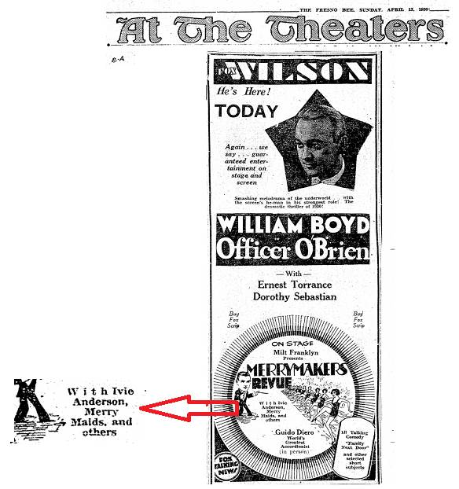
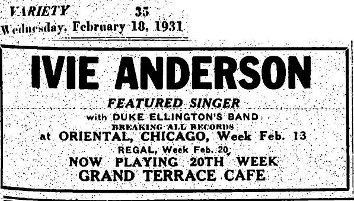
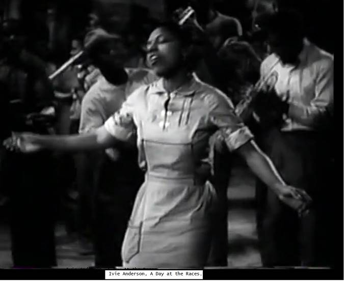
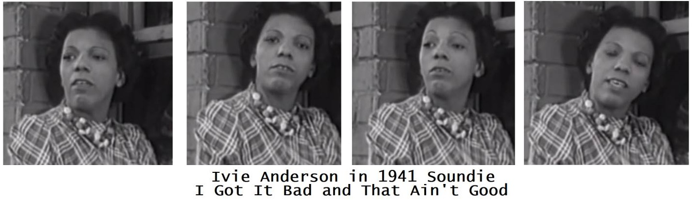
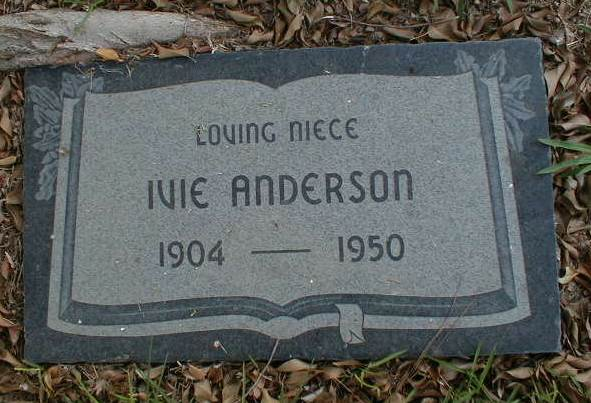

This webpage combines research by Ken Steiner,Steven Lasker and David Palmquist.
E-mailed comments, corrections and additional information are welcome.
Last updated 2018-07-07
Ivie (Ivy) Anderson
Supplement to
The Duke – Where and When
A Chronicle of Duke Ellington's Working Life and Travels
IVIE ANDERSON'S TIPS TO VOCALISTS
Down Beat, 1942-07-15, p. 31
Advising a young singer is the worst thing in the world – but here goes.
Acquire proper and distinct articulation.
Be neat of dress and of personal appearance.
Pick songs and arrangements suited to your voice and personality.
Take singing lessons and keep on as long as you can – provided you have
natural ability. From then on you're on your own.
Go out on the stage and do what's most natural for you. The only thing a
young singer can do is to do her best.
An amateur may sing beautifully, but her negative stage personality may more than offset her good voice.
Knowing or "typing" an audience immediately you walk out on a stage comes only with experience. So does timing.
Knowing your audience is practically a course in mass psychology. I used to "blow
up" easily. Now the roof can fall down and it won't even bother me.
If you're hoarse or have a cold, just sing the best you can.
Don't take it to heart if you don't get the applause you think you should.
Singers with bands don't usually take the rap if they flop. They just go out and
join another outfit. If they're pretty, they join a bigger band.
Try to sing songs as if they were stories. Don't try to sell your voice –
sell entertainment.
ADVICE TO All YOUNG ASPIRING ARTISTS Sepia Hollywood, August 1946 "...hitch your wagon to a star but when you begin to go up, don't be a carbon copy of someone else, but rather get some sort of style that will be all your own and serve you as an identification mark."
Ivie's recordings with Ellington per New Desor Vol.II:
Alabamy Home
All God's Chillun Got Rhythm
At a Dixie Roadside Diner
At Your Beck and Call
Carnival in Caroline
Chocolate Shake
Cotton
Delta Bound
Dinah Lou
Ebony Rhapsody
Ferryboat Serenade
Five O'Clock Whistle
Get Yourself a New Broom
Happy As The Day Is Long
Hayfoot, Strawfoot
I Don't Mind
I Got It Bad (And That Ain't Good)
I Want a Man Like That
If Dreams Come True
If You Were In My Place
I'm Checking Out – Goom Bye
I'm Satisfied
In a Mizz
In a Red Little Cottage
Isn't Love The Strangest Thing?
It Don't Mean a Thing (If It Ain't Got That Swing)
All God's Chillun' Got Rhythm (film soundtrack, "A Day at the Races", early 1937)
My Honey's Lovin' Arms The Gotham Stompers 1937-03-25 (with several Ellington sidemen)
Did Anyone Ever Tell You The Gotham Stompers 1937-03-25 (with several Ellington sidemen)
Where Are You? The Gotham Stompers 1937-03-25 (with several Ellington sidemen)
Make with the Kisses Jack Teagarden and his Orchestra, 1940 01 26 broadcast, Boston
The Starlit Hour Jack Teagarden and his Orchestra, 1940 01 26 broadcast, Boston
Stormy Weather (Jubilee transcription, date uncertain, possibly April 1943)
Mexico Joe Ceele Burke's Orchestra, early 1944
Play Me the Blues Ceele Burke's Orchestra, early 1944
He's Tall, Dark and Handsome accompanied by Johnny Otis and His Orchestra, October 1945
Jam Session Blues small group including Willie Smith and Oscar Pettiford, October 1945
I Got It Bad Ivie Anderson and Her All Stars, January 1946
On The Sunny Side of the Street Ivie Anderson and Her All Stars, January 1946
You Ought To Know Ivie Anderson and Her All Stars, January 1946
The Voot Is Here To Stay Ivie Anderson and Her All Stars, January 1946
He's Tall, Dark and Handsome with Phil Moore's Orchestra, October 1946
Empty Bed Blues with Phil Moore's Orchestra, October 1946
Twice Too Many with Phil Moore's Orchestra, October 1946
Big Butter and Egg Man with Phil Moore's Orchestra, October 1946
Play Me the Blues with the Cee Pee Johnson Orchestra, 1947 (Jubilee broadcast #60)
Radio interview, 1947-09-27: Ivie Anderson interviewed by Bill Hill Radio station CKMO, Vancouver, B.C.
Disclaimer: Some dates can only be estimated because the newspapers did not reliably date the events. An example is where Ivie's biography published August 4, 1934 says the author met Ivie Tuesday night. The Tuesday in question June 12, some eight weeks before publication. Other ambiguities arise by delays in sharing stories between publications and press deadlines had to allow for weekly newspapers to be issued earlier in the week than the date would suggest.
Ivie or Ivy Marie Anderson, Duke Ellington's first regular female vocalist, was an entertainer rather than just a singer.
Ivie was born July 10, 1904 even though some sources say July 10, 1905.
She grew up in Gilroy, California, where she claimed to have been born, but research suggests she was born in Louisiana and lived in Oklahoma before arriving in Gilroy with her mother around 1913.
A February 2008 Gilroy Dispatch on-line story, Jazz gem remembered includes a picture of her as a schoolgirl and one later of her with former neighbours in Gilroy.
Ivie joined Duke Ellington's orchestra temporarily on February 13, 1931 and permanently four weeks later and stayed until August 1942. Some sources report Ivie joined Ellington in 1932 – that was when she made her first records with Duke. The summer before she left, Ivie and her soon-to-be second husband opened Ivie's Chicken Shack in Los Angeles, and later built a small apartment building.
Ivie continued to sing after leaving Ellington, and died prematurely on December 28, 1949.
Already well-established in show business before being hired by Ellington, Ivie is said to have started singing professionally in 1921 or 1922 and in 1923 she was in the tour companies of the revues "Struttin' Along and "Shuffle Along". By 1925, she is said to have already performed in Cuba, New York (the Cotton Club) and Los Angeles with the Paul Howard, Curtis Mosby, and Sonny Clay bands. In 1928, she sang in Australia with Clay's band and returned to Los Angeles, playing in Frank Sebastian's Cotton Club and Curtis Mosby's Apex Nite Club. Her name appears in the press at least two dozen times in 1928 and more than fifteen times in 1929 and early 1930, most often in the Afro-American papers The California Eagle and the Chicago Defender.
Chicago Defender, national ed., 1935-02-09 (Courtesy Steven Lasker)
Ulanov 1946:
'There had been a few isolated vocals on Ellington records: those by Sonny [Greer], Dick Robertson's on Sam and Delilah, Adelaide Hall on Creole Love Call and Blues I Love to Sing, Baby Cox on the OKeh Hot and Bothered and Mooche. Ivie was, however, the first girl Duke ever hired for the express purpose of singing with his band. She almost was the last: she stayed twelve years.'
Steven Lasker's comment:
Odd that Ulanov would say "there had been a few isolated vocals on Ellington records" which I guess is correct if you overlook records with vocals by....Irving Mills, Bennie Payne, Chick Bullock, Frankie Marvin, Cootie Williams, Ozie Ware, Smith Ballew, Sid Garry and the Rhythm Boys.
"Ulanov 1946", p.105 (Barry Ulanov, Duke Ellington (Creative Age Press, 1946 Musicians Press Ltd, London, 1947 and Da Capo Press, New York, 1975.)
Ulanov 1955:
'...It was Ivy Anderson's fortune to have a voice and a personality that fitted an orchestra and an era so tightly that she was and will be remembered as long as the music and the time are remembered. Her life, like her songs, was a medley, a puzzling mixture. She was born in Oklahoma and educated at a convent in California, and she was as sophisticated a singer as jazz has produced. She had had some serious vocal coaching and sang in night clubs and revues, including Shuffle Along. With her neat coiffure, her impeccable clothes, her refined and delicate features, and her exquisite manner went an improper, rough voice, an impudent gesture, a sardonic smile that, in bewildering combination, tumbled audience after audience into her lap in the course of eleven years with Ellington. ...She left the Duke in 1942, suffering from asthma, the condition which killed her seven years later at the age of forty-five. After leaving Duke she worked irregularly; she made her final appearance in New York to raise the last few dollars necessary to buy an apartment house in Los Angeles, which was to have been her security... '
'...If singing was needed, before 1931, it was handled by drummer Sonny Greer or, on an occasional and reluctant basis, trumpeter Cootie Wiliams. At the Cotton Club, where the orchestra accompanied a number of singers, the Ellingtonians had not needed their own, and relatively few of the other bands regularly featured singers. But now, for stage shows on the road, Ellington decided to add a vocalist. In Chicago he tested a singer named Ivie Anderson for two weeks, and then hired her. Anderson, twenty-five [sic], had been sent over from the Grand Terrace by fellow bandleader Earl Hines... Though on stage she appeared almost angelic... off stage she was quite another person, in the words of future band mate Rex Stewart, bossing a poker game, cussing out Ellington, playing practical jokes are giving some girl advice about love and life. ...Remaining with the orchestra for eleven years, Anderson became Ellington's most versatile singer.'
John Edward Hasse: Beyond Category, The Life and Genius of Duke Ellington (paperback edition), Da Capo Press, New York, 1995, pp.145-147
Ivie's early life
References
When was she born?
Ivie was born 1904 07 10, although some sources say she was born on that date in 1905. 1904 is documented by:
The California Death Index 1940-1997 (Ancestry.com) - Ivie Anderson Collins
Her headstone (which shows the wrong year of death)
The cover of her funeral brochure
Her age (5) in the 1910 U.S. census enumerated 1910 04 22, for Chickasha City, Oklahoma, in the entry for Smith, Ivie (see discussion below). This is consistent with a birth between 1904 04 23 and 1905 04 22.
Her age (15) in the 1920 U.S. census back calls enumeration for Vallejo Township, California, in the entry for Anderson, Ivy, is consistent with a birth between 1904 04 23 and 1905 04 22.
Her age (23) and birth date ("July 10th.1904") appears on the S.S. Sierra LIST OF UNITED STATES CITIZENS Arriving at Port of San Francisco April 19, 1928
Her age (28) on R.M.S. Olympic June 9, 1933 Alien Arrivals in Southampton under the name of "JOHNSON, Ivy Marie known as Ivie Anderson," (28 is consistent with the 1904 birthdate).
Her age (29) and birth date ("10th.July 1904") on S.S. Majestic August 8, 1933 Arriving U.S.Citizens, New York under the name "JOHNSON, IVEE A."
Her age (34) on the Île de France May 3, 1939 list of Alien Passengers Embarked at Southampton, under the name "ANDERSON Ivie" (consistent with a 1904 birthdate).
Her age (25) in the 1930 U.S. census enumeration taken 1930 04 04 for Los Angeles City, California, in the entry for Anderson, Ivie, is also consistent with a birth between 1904 04 23 and 1905 04 22.
Funeral brochure (Courtesy Wren Troy Brown via Steven Lasker)
Fourteenth Census of the United States, California, Solano County, Vallejo Township, Chickasha City (Part of), enumerated Back Calls, 1920, lines 83-85 (household of Jones, Louis)
Fifteenth Census of the United States 1930, Los Angeles City, A.D.62, Block 460, enumerated April 4, 1930, lines 30-33,756 East 52nd Place
Where was she born?
Until Fred Glueckstein published his research in The Duke Ellington Society
Bulletin, 2008-06 pp.4-5, with credits to Tom Howard and Phill [sic] Laursen of the Gilroy Historical Museum, Ivie's birthplace was generally thought to have been Gilroy, California or in Oklahoma. Mr. Glueckstein's research indicates she was born in Bossier Parish, Louisiana and didn't arrive in Gilroy until 1913 or so.
.
In support of Gilroy:
Ivie's 1925 marriage certificate says her birthplace was California.
In a 1940s interview with Vancouver broadcaster Bill Hill, Ivie said she was born in Gilroy, California. This is consistent with her place of birth recorded in:
1928 passenger lists for the S.S. Sierra and the S.S. Majestic, respectively
S.S. Majestic August 8, 1933 Arriving U.S.Citizens, New York has her as "JOHNSON, IVEE A.," age 29, birth date "10th.July 1904" and place of birth "Gilroy Cal."
Île de France May 3, 1939 Alien Passengers Embarked at Southampton
Steven Lasker
'Ivie's certificate of death lists her birthdate as 1904-07-10 (a date also found on the leaflet passed out at her funeral on 1950-01-03), her birthplace as Gilroy, Calif., her father as Jobe Smith and her mother as Sylvia Jones.'
The California Eagle report of a 1935 interview says she was born in Gilroy.
Down Beat:
'[...] Born in Gilroy, California, she studied voice at St. Mary's Convent from the age of nine to 13. Then she went to Washington, D. C. to study two more years under the tutelage of Sara Ritt. At school she sang in the glee club and the choral society.'
Ulanov 1946 (a more or less contemporary report):
'Ivie was born in Gilroy, California [sic], and studied at a convent out there, St.Mary's, from the ages of nine to thirteen. Two years in Washington, some voice study in the capital city and singing in the glee club and chorus at school, and Ivie Anderson was ready for the Coast again and her first job.'
National Trade and Professional School for Negro Women and Girls
Nannie Burroughs School
Nannie Burroughs Girl Training School
It opened with 35 students who were trained in domestic science, business and sewing, printing, barbering, and shoe repair and students
were required to take a Negro history class.
The school raised funds operating a laundry, selling things made by the students, and running a summer school for women.
We don't yet know when Ivie attended, nor how large the school was at the time.
.
Undated audio file, Ivie Anderson interviewed on air by Bill Hill. This interview was likely on Vancouver radio station CKNW circa 1947.
The California Eagle, Los Angeles, Cal., 1935-09-20 p.2-A
Down Beat, 1942-07-15, p. 31: Paul Eduard Miller, "Ivie Joined the Duke for Four Weeks, Stays with Band for 12 Years"
Audrey Thomas McCluskey: A Forgotten Sisterhood, Pioneering Black Women Educators And Activists in the Jim Crow South p.131
The 1900 census for Bossier Parish lists Silva as the 14-year-old daughter of
widow Frances Jones, and in the same household were Silva's siblings Lewis
and Frances Jones. It says 6 of Mrs. Jones' 10 children were still alive.
Mr. Glueckstein cites a marriage record from Benton, Louisiana, the parish seat for Bossier Parish,
showing a November 14, 1901 marriage between Silva Jones and Jobe Smith. His reference is State
of Louisiana, Parrish [sic] of Bossier, The Clerk of the Court, Benton, Louisiana, Marriage Book 2,
p.520. He notes Silva signed the certificate, but Jobe signed with his mark (X).
Mr. Glueckstein:
' On July 10, 1904, a baby girl was born to Silva and Jobe Smith in
Louisiana. The baby was named Ivie.6 Four years later in 1908, Silva
married David Hunt, a mulatto, who was born in Tennessee.
By 1910, Ivie, who was six years of age, her mother, and her step-father were living
in Chickasha (Grady County), Oklahoma... It is known that by 1910, Silva had borne a second
child who had not survived.7 [Notes] 6. The earliest documentary
evidence supporting Ivie's place of birth as Louisiana is the U.S. Census enumerated
on April 22, 1910. See David Hunt (head of household), Silva Hunt (wife) and Ivie
Smith (stepdaughter)... 7. Ibid.'
Webmaster's comments:
Mr. Glueckstein appears to taken 1904 as Ivie's birth year from her age of five shown in the census. Enumerated 1910 04 22, the census indicates a birth between
1904 04 23 and 1905 04 22.
I have not seen the 1901 marriage documents and The Louisiana Secretary of State website says the law did not require birth records for parishes other than Orleans until 1918.
Mr. Glueckstein does not say if Silva divorced Jobe, if he died, or what happened to him.
The 1910 census shows Mr. and Mrs. Hunt had been married two years, indicating a marriage between 1907 and 1908 if two years was anything but a rough estimate. Each member of the family is described as mulatto, and the entry for Ivie says she and both parents were born in Louisiana.
Silva's entry shows she had had two children, and one was still alive.
Mr. Glueckstein:
'A few years later, around 1913, Ivie and her mother were living in Gilroy, California. Silva had
married for a third [sic] time. Her new husband was a man named Isaac J. Anderson, ...a janitor ... [who] also ran a bootblack stand...'
Webmaster's comments:
The given name of this husband appears to be Issac rather than Isaac.
1913 needs to be confirmed, as well as the date Silva married Issac, since Mrs. Silva or Silvia Jones, age 26, of Chickasha married Johnie [sic] Roberts, age 25, of Oklahoma City on December 23, 1912 in Chickasha.
The marriage license application and the license itself are dated December 23.
The certificate, recorded on December 30, says they were married December 23.
"Silva" is written on the application for a marriage license, and "Silvia" is written
in the license itself.
Witnesses were Mrs. [sic] Anderson Moore and Mrs. Annie Moore
but they did not sign the document.
Since Mr. Glueckstein says Silva's sister Frances was known as Annie and her husband
was Anderson Moore, the "Mrs." preceding "Anderson Moore" seems to be a transcription
error by the clerk who filled in all three documents by hand.
Mr. Glueckstein writes that Silva developed cancer and took Ivie to visit Annie (Frances) and her husband, Anderson (Moore) in 1916. They stayed for a few months, before returning to Gilroy, with Silva on a cot. Silva died in December 1917. Her funeral was at Antioch Baptist Church, of which Silva was a member, and she is interred at Oak Hill Cemetary in San Jose.
Webmaster's comments:
This belies the statement by A.H. Lawrence in , Duke Ellington and His World, A Biography, Routledge, 2001, that Ivie was orphaned at age 9 [i.e. between 1913 07 10 and 1914 07 09].
An ANP 1934 biographical sketch clouds the issue, saying:
'Her father is dead, but her mother, Mrs. Lula B. Harris, lives at 2725 Pine Street, San Francisco.'
The 1920 census for Vallejo Township, Solano County, California, has Anderson, Ivy living at 133 Denier. The household consists of Jones, Lewis, age 31, head; Jones, Bennie, age 29, his wife, and Ivy as their niece. Ivie's column for Attended School Since Sept. 1 1919 says yes, and her birthplace and her columns for her parents' births all show Louisiana.
Webmaster's comments:
The census information was likely provided by Mr. or Mrs. Jones since Ivy was a minor.
The 1920 census at Gilroy has Anderson, Isaac P., Head, age 41 living with his daughter, Davis, Annie M., age 19 and grandson, Edw[sic], 1 year old.
The 1930 census for Los Angeles City, Los Angeles County, California has Anderson, Ivie at 756 East 52nd Place as the head of the household; other members of the household were: Moore, [illegible]easetta(cousin), age 11; Jones, Frances, grandmother, age 75; and Watkins, Lucille. Lucille's occupation is "maid" with "servant" written above it.
The Black Dispatch, Oklahoma City, Ok. 1941-04-19 p.8 (Courtesy Ken Steiner):
'Ivie Anderson, singing star with Ellington is an Oklahoma product. Her grandmother still lives in Chickasha, just a stones throw from Oklahoma City. Ivie has made several trips abroad and [is] among the few vocalist [sic] to have stayed with a big band over so long a period...'
Twelfth Census of the United States, Louisiana, Bossier County, Ward 6, enumerated June 6, 1900, lines 31-34
Thirteenth Census of the United States, Oklahoma, Grady County, Chickashaw, Twp. Precinct 1, Chickasha City (Part of), enumerated April 22, 1910, lines 88-90
Marriage Record (Application for Marriage License, Marriage License and Certificate of Marriage), State of Oklahoma, County Court, Grady County, p.51
Complete article in the Gilroy Advocate (Gilroy, California), 1917-12-08 p.1:
'Death of Mrs. I.P.Anderson Isaac P. Anderson, janitor of the Bank of Italy, who runs a bootblack stand at Fredrickson's barber shop, has the sympathy of many friends in the loss of his wife, which occurred on Monday afternoon, at the county hospital, San Jose. Mrs. Anderson was a sufferer from cancer. Last summer she expressed a wish to visit her old home in Oklahoma, and accompanied by her daughter Ivie, spent several months there. The disease had gained too great a headway, and she was brought back to California on a cot to die. She was a native of Louisiana, aged 30 years, and had lived in this city about three years. The funeral took place in San Jose, Wednesday afternoon, from the Antioch Baptist church, of which she was a member. Interment was in Oak Hill cemetery.'
-Source: Seattle Public Library (Courtesy Ken Steiner)
Ivie's given name
.
Ivie's first name is spelled "Ivie" on
the 1910 and 1930 censuses
1928 S.S.Sierra passenger list
the Gilroy Advocate article about her mother's death
"Ivy" was often used in ads,
particularly in the 1920s, and sometimes even "Ivey."
The 1933 SS Majestic passenger list shows "Johnson, Ivee."
The index to Ulanov 1946 says "Anderson, Iva (Ivie)."
.
Ivie's surnames
.
Smith - name at birth
Anderson - from her mother's husband in Gilroy
Johnson - from her 1925 marriage to William Franklin Johnson
Neal - from her 1942 marriage to Marque Neal
Collins - from her 1949 marriage to Walter Collins
.
Ivie's marriages and romances
.
Overview:
Ivie first married in 1925 and was separated by 1928. In 1941, she sued for, and was granted, a divorce, but it was not final until 1942, after a one-year waiting period.
During the 1930s Ivie is believed to have been romantically involved with two men.
She remarried in 1942 even though her divorce was not yet effective. This marriage was annulled in 1948
Ivie married a third time in 1949 and was still married when she died.
William Franklin (Bill) Johnson
Steven Lasker:
According to Dan Burley in the Kansas City Call:
"Miss Anderson was married in 1925 to Bill Johnson, former football player of the University of Nebraska. They sung a swan song to each other in 1928. She has a daughter."
Their marriage certificate says the wedding took place 1925-06-01 in Los Angeles, and was recorded on 1925-06-04 with the L.A. County Recorder.
The groom is William Franklin Johnson, 25191/2 Central Avenue, Los Angeles; colored; 23; birthplace Nebr. occupation Waiter...
The bride is Ivie Marie Anderson, 1725 Stuart St., Berkeley, Cal; colored; 20, birthplace Calif., occupation Performer, father Issac P. Anderson, birthplace Delaware, mother Sylvia [sic] Jones, birthplace Okla.
It was the first marriage for both.
Ivie's divorce complaint, filed 1941-10-17, stated that the couple separated in May 1928, there were no children and no community property... ' It says Ivie had known the defendant since 1922, and had last seen him in 1940.
An "Interlocutory Judgement of Divorce" was granted 1941-11-25 with a one-year waiting period. Steven Lasker:
'
The "Final Judgement of Divorce" of Ivie Anderson Johnson (Plaintiff) vs. William Johnson (Defendant) was "done in open court" on 1942-12-04, filed on 1942-12-07 (if I read it correctly), entered on 1942-12-08 and docketed on 1942-12-10.'
Was Ivie a mother?
As noted, Burley's June 1934 column said Ivie had a daughter
An August 1934 gossip item in The Indianapolis Recorder said she had a fourteen-year-old daughter attending high school in Los Angeles.
The Afro-American, 1937-10-23 p.4:
'Poinsetta [sic] Moore, dotter [sic] of Ivy Anderson, songstress with Duke Ellington's crew, is a student at Howard.'
The Afro-American, 1949-12-31 p.2:
'Miss Anderson was married to William Johnson, former football player of the University of Nebraska. They separated in 1928. A daughter was born during his [sic] union.'
The 1930 census has an 11-year-old girl, Pleasetta Moore, living in Ivie's household as her cousin, but Pleasetta's death record in the United States Social Security death register index (1990) says her parents were Anderson Moore and Annie F. Jones. In the 1920 census, Anderson and Annie's household in Chickasha, Ok. had two children, Willie, age 7 and Plesetta or Plyetta, age 2 1/12, this age being inconsistent with an age of 11 in the 1930 census.
Other than the mentions in the newspapers, which are notoriously unreliable, we have seen no evidence that Ivie had a child. If she did, and if the child was 14 in 1934, she would have been born between 1919 and 1920.
Dan Burley, "She Swing and She Sings and It All Comes So Easy!," Kansas City Call, 1934-06-22, p.8 (Courtesy Ken Steiner via Steven Lasker )
California Eagle 1941-10-30, (Courtesy Ken Steiner)
Louis Bacon
Steven Lasker:
Bacon and Anderson had ample opportunity to get to know each other when Bacon
toured and recorded with Ellington in the period from September 1933 into the first
days of 1934. They were much in love by the end of that year according to the
Pittsburgh Courier in 1934:
'Backstage with Duke Ellington and his ork. Friday afternoon [1934-10-05] at the Apollo, we find Ivie Anderson as much in love with Louis (Fess Williams) Bacon as ever.'
The Chicago Defender 1936:
'Ivy Anderson, the thrush of the Duke Ellington outfit, and Louis Bacon, trumpeter in the Louis Armstrong ork, are being voted as Harlem's most lovable duo, all of which accounts for Louis Bacon being so lonesome for his honey chile.'
Reports that Ivie Anderson was also Mrs. Louis Bacon weren't true. According to
one anonymous interviewer (Norfolk Journal and Guide 1937):
Besides being 33 years of age, which may discourage many of the swains who have fallen in love with Ivie's voice via the 'piccolos,' she is happily married. The husband is Lewis [sic] Bacon, trumpeter with Louis Armstrong's outfit.
Bacon left America to join the Willie Lewis orchestra in the summer of 1939, and was in Europe after the fall of France. Down Beat wondered as to his status, incidentally noting that he was Ivie's husband. This claim was repeated in Ulanov 1946 (p.160).
Pittsburgh Courier (1934-10-13, section II, p. 9)
Alan McMillan, Hi Hattin' in Harlem, The Chicago Defender (national edition) 1936-02-01 p.8 (Courtesy Ken Steiner)
Norfolk Journal and Guide, 1937-11-27, p. 18 (Courtesy Ken Steiner)
Cootie Williams
Steven Lasker:
In a July 1976 interview conducted by Patricia Willard (and quoted by Stuart Nicholson, "Reminiscing in Tempo," p.164), Barney Bigard recalled that Cootie Williams and Ivie Anderson were "going together;" he doesn't date their romance, but indicates it began after an incident that took place while the band's train was stopped in El Paso, Texas. This was probably December 1 or 2, 1936, since Ellington's itinerary shows performances in Pecos, Tex. and Albuquerque, N.M. on those dates, and El Paso was probably on the rail lines between those cities.
Brooks Kerr recalls a story told him by Cootie that establishes that Cootie and Ivie were intimate when both were in Paris in March 1939.
.
Marque C. Neal
Ivie met Marque Neal in 1940 according to his testimony in litigation ongong between them after her death.
After he moved from New York to California in 1941, they opened a restaurant named Ivie's Chicken Shack and sold it in 1944.
Ivie married Marque in 1942 before her divorce from Johnson was legally effective.
Steven Lasker:
'Claire Gordon and Patricia Willard have both told me that Neal was well-liked by Ellington's men.'
In her 1948 lawsuit against Neal, Ivie claimed:
She sold the house she owned at 756 E. 52nd Place in 1946, with the net proceeds of $2,900 and deferred payments of $1,000 deposited into their joint savings account.
Before they married, she owned two duplexes at 4218 San Pedro St. In 1946 Marque suggested her money wasn't earning much interest and that it would be better to sell and remove the two duplexes and build an apartment building to provide more income and provide security for her future.
She sold the buildings and her car for total net proceeds of $4,200, deposited in their joint savings account.
On May 31 1946 she signed documents at the Pacific Construction Company offices after the plans, specifications and contract for the apartment building were ready.
Steven Lasker fleshed this out a bit:
'Court records document that Ivie, previous to her marriage to Neal, had purchased a parcel of land at
4218 S. San Pedro Street, Los Angeles, on which stood two duplexes. These structures were sold and removed, and in their
place (but with a new address: 259 E. 41st Place), an apartment building christened the "Nealander" was constructed in
the spring of 1946...The building still stands, and can be viewed on Google Maps "streetview." (If you zoom in at either side of the building's front, or on either of the building's sides, you'll see, halfway up, small cut-metal signs that spell out "Nealander.")'
In reporting her death, Los Angeles Times said the address was 259 E. 41st Place. The initial Los Angeles Sentinel report gave the same address, but its Dec. 29 edition (page A-2) located it a block south, at 42nd and San Pedro. The ANP wirestory in Black Dispatch gave the address as 659 E. 43rd St., about half a mile southeast.
The Nealander was Ivie's home when she died. She and Marque moved into one of the apartments in 1946, but it isn't clear which unit. We initially thought it was the ground floor unit at the east end, but in 2017 the building's property manager told David Palmquist that he thought it may have been the upper unit, which is much bigger and nicer than the others. The building was run-down when its current owner acquired it, but has been renovated and is now mainly used for social housing.
In 1948 Ivie petitioned the Superior Court to annul her marriage to Neal on the grounds it was ineffective since her marriage to Johnson was not yet dissolved when she married Neal. Steven Lasker advises the decree of annulment was signed by the Superior Court on Aug. 23, 1948.
The California Eagle
Wilma Cockrell, Jam Session, 1941-06-19, (Courtesy Ken Steiner)
1941-07-17
1941-07-24
Telecon, Mark MacFarlane/Palmquist 2017-10-02
Plaintiff's "First Amended Complaint for Declaratory Relief, to Impress a Trust, Partition, Quiet Title and for an Accounting" (Courtesy Steven Lasker )
Ivie then sued Neal over ownership of the Nealander. The California Eagle reported:
'Ivie Anderson... Presently on a song tour of the Pacific coast, threw a legal bombshell at her husband Mark [sic] Neal local restaurateur when she filed a suit within the last week seeking to quiet title and adjudicate her property rights in a large apartment unit ... valued at approximately Fifty Thousand Dollars ($50,000.00)...She further asserts that she invested into the property approximately Twenty-Seven Thousand Dollars ($27,000.00) money belonging to her personal estate which she had received from her various employments as an entertainer and that Neal has no intedest [sic] in tre [sic] property as any interest that has later been acquired has all come about as a result of the rents that take care of the payments. Trial of the case has been set for July 13, 1949 in the local Superior Court... Attorney Gordon...scoffed at previous newspaper accounts of a settlement having been entered into between the parties where Mrs. Neal received the sum of fifteen thousand dollars ($15,000.00) for her equity in the property. Attorney Gordon stated that such a statement was merely rumor without fact.'
The California Eagle 1948-10-21 p.4
Steven Lasker:
'Los Angeles Court Records show various dates for the marriage of Ivie to Marque Neal:
Ivie's "Complaint for Annulment" states that "plaintiff and defendant intermarried in the City of Oversite, State of Arizona, on or about the 1st day of May, 1942."
Marque Neal's answer to Ivie's initial legal complaint over the Nealander (filed 1948-09-17) noted: "defendant admits that plaintiff and defendant were intermarried in the State of Arizona on or about the 1st day of May 1942."
According to a 1949-09-28 filing by the plaintiff ("First Amended Complaint for Declaratory Relief, to Impress a Trust, Partition, Quiet Title and for an Accounting"), "the plaintiff married the said defendant during April of 1942.
According to the court's "Second Amended Findings of Fact and Conclusions of Law" filed 1950-10-19, "It is true that Marque Neal and Ivie Anderson did, on the 11th day of May, 1942, in the State of Arizona, enter into a marriage contract prior to the final judgement of divorce between William Johnson and Ivie Anderson that was signed in the court and entered December 4, 1942."
Elsewhere in the same document: "The court finds that said parties, Ivie Anderson and Marque Neal, did marry in Arizona in April, 1942."
Now, where, exactly is "Oversite, Arizona?" Google maps shows an Oversite Canyon in Arizona, just above the Mexican border and closer to New Mexico than California. It seems to be a geographical feature, not a place where anybody seems to live, so either Oversite is a town that disappeared, or a town that's changed its name, or...
A report in the California Eagle (1942-07-24) shortly after the restaurant opened makes clear that Neal was the principal investor:
"It's nice to see a swell guy like Marcus [sic] Neal on top of the heap, as his Chicken Shack with Ivie Anderson's name in the electric light sign, will be a big draw."
In subsequent litigation, the court found that Neal
"opened a restaurant known as 'Ivie's Chicken Shack' with his personal funds and that he operated the restaurant from about June 13, 1941, until it was sold about November 20, 1944; that the proceeds from the sale thereof and profits from its operation were deposited in the joint savings account [held by Marque Neal and Ivie]."
ANP wirestory (The Indianapolis Recorder 1948-08-21 p.13):
'LOS ANGELES (ANP) – Ivie Anderson,... reached a property settlement in the annulment action with her husband, Marque Neal, last week. According to the terms of the settlement, Neal is to give Mrs. Anderson $15,000 in return for complete possession of the Nealander Apartment house, ownership of which was held jointly by the two. According to Neal's attorney, Crispus A. Wright, Mrs. Anderson will be allowed to take the annulment by default on the grounds that she was not divorced from her previous husband when she married Neal.'
Steven Lasker:
'Marque Neal was served at the Nealander with a summons to answer an annulment compaint from Ivie Johnson aka Ivie Neal on 1948-05-14. Marque Neal, the defendant, failed to answer the complaint within the 10-day period prescribed by law. Judge Ingall W. Bull issued a "Judgement of Annulment of Void Marriage (Default)" on 1948-08-20 that was filed with the County Clerk three days later.'
The California Eagle 1948-10-21 p.4:
'... Miss Anderson who filed the suit under the name of Ivie Neal through her attorney Walter L. Gordon, Jr., has just recently secured an annulment of her marriage to Neal approximately two months ago ...In this present action, Miss Anderson asserts that she and Neal married May 1, 1942, and lived together until August 20, 1948...'
The following articles report on the lawsuits:
Chicago Defender, Chicago, Ill., 1950-01-07 p.1 reported Neal began an action more than a year previously over ownership of their apartment building. This was incorrect; Ivie initiated the lawsuit. Steven Lasker:
'The "Nealander suit" entered the court system on 1948-09-07, when Ivie Neal, Plaintiff, filed a complaint vs. Marque Neal seeking "Quiet Title, Establish Trust, and Partition of Real Property." '
An ANP wirestory in Black Dispatch, 1950-01-21 pp.1,2 said Neal and Collins were in litigation over Ivie's substantial ($75,000) estate. The article seems to indicate this was a second lawsuit, since it also mentions Neal's suit over the apartment block.
Chicago Defender, Chicago, Ill., 1950-01-21 p.1 speculated the court fight might not come off because Neal and his lawyer had found a 1946 joint tenancy deed giving survivorship rights to Neal.
Los Angeles Sentinel, Los Angeles, Cal. 1950-06-29 pp.A-1,A-2 reported the judge had decided the case in favour of Neal.
Chicago Defender, Chicago, Ill., 1950-01-07 p.1 (Courtesy Ken Steiner)
ANP wirestory, Black Dispatch, 1950-01-21 pp.1,2 (Courtesy Ken Steiner)
Chicago Defender, Chicago, Ill., 1950-01-21 p.1 (Courtesy Ken Steiner)
Los Angeles Sentinel, Los Angeles, Cal. 1950-06-29 pp.A-1, A-2 (Courtesy Ken Steiner)
Walter Collins
In 1949 Ivie married Walter Collins, who worked in real estate.
They were still married when she died at the end of the year.
Walter carried on with Ivie's litigation against Marque Neal after she died.
In 1950 Mr. Neal won because Ivie and Marque had been joint tenants.
Early Career
.
Steven Lasker:
Miller, in Down Beat, 1942-07-15, p. 31:
'...By 1923, she was ready for her first job -- at Tait's in Los Angeles. There she also worked at The Tent, owned and operated by Mike Lyman, bandleader Abe's brother. She became a line girl in a Fanchon & Marco revue featuring Mamie Smith [this would be "Struttin' Along"]. When the soubrette of the show fell ill, Ivie got her chance; and she stepped in to fill the spot on an hour's notice. This led to her work as a soubrette with the Shuffle Along musicale, to work at Sebastian's Cotton Club, in a five [sic] months' tour of Australia with a Fanchon & Marco unit, and finally to heading her own revue on the West Coast for a 20-week stretch. She even sang with Anson Weeks' band at the Mark Hopkins Hotel in San Francisco. And so, by 1930, when she began her engagement at the Grand Terrace, she already was a seasoned performer. But it was the unique combination of Ellington and Anderson which was to bring Ivie recognition and acclaim, not only of the profession, but of the public as well. She was the first singer ever to join a colored band as part of the regular organization, missing by only a year the record established by Fritzi White, who will be remembered as the vocalist who joined George Hall late in 1929. Veteran singer Mildred Bailey joined Paul Whiteman in 1930.'
Ulanov 1946:
'... Ivie Anderson was ready for the Coast again and her first job. She worked at Tait's in Los Angeles and at the Tent, run by Abe Lyman's brother Mike. When a featured singer in the Fanchon and Marco revue... became ill, Ivie stepped out of the chorus line to seeing the soubrette's part on one hour's notice. Other jobs as a soubrette followed, leading to that role in Shuffle Along, a spot at Sebastian's Cotton Club, a five month's tour of Australia with a Fanchon and Marco unit, and finely her own group in a review which toured West Coast theaters for twenty weeks. There was even one short engagement with Anson Weeks' white band at the Mark Hopkins Hotel in San Francisco. In 1930, she was a featured singer in the show at the Grand Terrace Caf' in Chicago; she remained at the Terrace until well into the winter of '31, until February 13... '
Webmaster's comment: According to Variety1925-12-23 p.41, owner Mike Lyman changed the name of his club three times in 1925, from the Winter Garden to the States, then the Tent, and finally in mid-December to Lyman's Cafe Alabam..
"Struttin' Along" featured Mamie Smith and her Jazz Houn's with "Creole Beauties Chorus." The first all-black revue to play the West Coast, publicity describes it as fashioned along the lines of "Shuffle Along" and "Strut, Miss Lizzie." It was advertised as having a company of 75, but some reviews during its tour say 60, and in Petaluma, the paper said 59.
The producers brought about 40 members of the company from the East Coast; the show may have played in the East or Midwest before opening in San Francisco and a show of the same name is found in 1924 newspapers, but these are beyond the scope of this webpage.
After playing San Francisco for seven weeks, "Struttin' Along" toured California, Oregon, Washington, Montana and Idaho until June, travelling by rail in Pullman coaches. Gaps in the following chronology may be due to a lack of bookings, or simply from the absence of newspapers for some of locations toured in the archives of Newspapers.com, Newspaperarchives.com, Genealogybank.com, Fultonhistory.com, Archive.org, Lantern.mediahist.org (Variety) and news.google.com/newspapers. Searching ProQuest, not available to this writer, will likely turn up more dates.
Performances:
Date
Location
References
Feb. 3-Mar.24
Century Theatre, San Francisco, Cal.
San Francisco Chronicle (Courtesy Ken Steiner): 1923-01-25 p.9; 1923-01-30 p.9; 1923-01-31 p.9; 1923-02-01 p.11; 1923-02-02 p.9; 1923-02-03 p.8; 1923-02-04 p.2; 1923-02-05 p.6 through 1923-03-24
The New York Clipper, New York, N.Y.: 1923-03-14 p.23
Feb. 24
The Plantation, Palais Royal, San Francisco, Cal. (special midnight performance following the Century show)
San Francisco Chronicle: 1923-02-24 p.2
Variety 1923-03-08 p.17 reported that after the Century run, the show would play 3 weeks in the "valley" before playing 4 weeks in Los Angeles. It did not list the engagements.
Mar. 25
Fresno, Cal.
Variety: 1923-03-23 p.38
Mar. 19
Red Cross Building, U.S. Veterans' Hospital, Palo Alto, Cal.
San Francisco Chronicle, San Francisco, Cal.: 1923-03-19 s.2
Philharmonic Auditorium, 5th at Olive, Los Angeles, Cal.
Los Angeles Sunday Times and Los Angeles Daily Times, Los Angeles, Cal.: 1923-04-05 pt.II p.6; 1923-04-08 pt.III p.28; 1923-04-10 pt.II p.9; 1923-04-11 pt.II p.6; 1923-04-12 pt.II p.6; 1923-04-13 pt.II p.7; 1923-04-14 pt.I p.6 California Eagle, Los Angeles, Cal.: 1923-04-07 p.1; 1923-04-21, feature section
Apr. 16-18
Spreckels Theater, San Diego, Cal.
San Diego Union, San Diego, Cal.: 1923-04-15 p.13; 1923-04-17 p.7 (review); 1923-04-18 p.2 (review) The Evening Tribune, San Diego, Cal.: 1923-03-17 p.11; 1923-03-24 p.15; 1923-04-17 p.11 (review)
Apr. 19
Yost Theater, Santa Ana, Cal.
Santa Ana Daily Register,Santa Ana, Cal.: 1923-04-11 p.12; 1923-04-14 p.12; 1923-04-17 p.11; 1923-04-18 p.11; 1923-04-19 p.11; 1923-04-20 p.12
Apr. 12
Clunie Theater, Sacramento, Cal.
California Eagle, Los Angeles, Cal.: 1923-04-07 pp.1,7
The Petaluma Argus, Petaluma, Cal.: 1923-04-30 p.6
Apr. 28
Hill Opera House, Petaluma, Cal. The troupe arrived from Santa Rosa by train in the morning and left for Santa Rosa at midnight that night to connect with a Southern Pacific train. The company numbered 59.
The Oregonian, Portland, Ore.: 1923-04-29 several pages, illegible page numbers; 1923-05-03 p.11; 1923-05-04 pp.4 (review),11; 1923-05-05 pp.11, 17; 1923-05-06 p.4
May 4
Members of the company appeared on radio:
'Seven big features, three of them included in the Hoot Owl programme... are to be offered through the medium of The Oregonian's powerful broadcasting station today... The big stuff from the Heilig show, "Struttin' Along," which will be there the rest of the week, will arrive at 11:30, and sure enough Mamie Smith, the celebrated leading lady, and her jazz band will be with the Hoot Owls... Mamie Smith will sing several songs,...Manager Newman also is arranging to bring part of the jazz orchestra; Caroline Snowden and Susie Hurst, billed as " jazz hounds," are coming; the "Struttin' Along" quintet, consisting of Corney Anderson, Norman Stewart, Ivey Anderson and E.Portern will make some contributions... Manager Newman... promised as much a real jazz music as his artists can crowd in a half hour of broadcasting...'
The Oregonian, Portland, Ore.: 1923-05-05 p.11
May 6-10
Metropolitan Theatre, Seattle, Wash.
Metropolitan Theatre programme, University of Washington Libraries Special Collections (Courtesy Ken Steiner) Seattle Post-Intelligencer, Seattle, Wash. (Courtesy Ken Steiner): 1923-05-06 s.3 p.5; 1923-05-08 p.7 Seattle Daily Times, Seattle, Wash. ( (Courtesy Ken Steiner): 1923-05-04 pp.4, 14; 1923-05-05 p.2; 1923-05-06 p.5; 1923-05-07 p.11 (review); 1923-05-08 p.11; 1923-05-09 p.11; 1923-05-10 p.11 Peter Blecha essay:Pioneering blues singer Mamie Smith makes her Seattle debut at the Metropolitan Theatre on May 6, 1923
May 25
Marlow Theatre, Helena, Mont.
The Helena Daily Independent, Helena, Mont.: 1923-05-20 p.7; 1923-05-21 p.5; 1923-05-22 p.5; 1923-05-23 p.4; 1923-05-26 p.2 (review)
May 26-27
Great Falls, Mont.
The troupe's baseball team played an exhibition game against a local team. While it was reported to already have beaten a Portland team, it didn't do so well in Great Falls, losing 21:7.
The Great Falls Tribune, Great Falls, Mont.: 1923-05-13 s.2; 1923-05-20 p.8; 1923-05-22 p.9; 1923-05-24 p.9; 1923-05-26 pp.6, 10, 11; 1923-05-27 p.10, p.15 (review)
June 1-3
Pinney Theatre, Boise, Ida.
The troupe's ball team played the Moose Lodge team of the local Twilight League.
The Idaho Statesman reported this was the end of the road trip, and said show would return to San Francisco to play again there.
Local newspaper reviews of the performances consistently praised the show, although these reviews tend to look somewhat alike. This may be because the company sent both an advance man and a follow man. Where attendance is mentioned, the show is said to have played to full houses.
Occasionally the press mentions baseball games between local teams and members of the Struttin' Along company.
Evidence that Ivie toured with this company is (1) "Ivey Anderson" appeared in the report of a radio show members of the company appeared on in Portland, and (2) "Ivy Anderson" is in the chorus listed in Seattle's Metropolitan Theatre programme.
"Shuffle Along" was the first all-black revue to become a Broadway hit. After playing over 500 performances at the 63rd Street Music Hall in 1921 and 1922, three new companies were formed, with all four touring the U.S. into 1924.
"Shuffle Along" reached the West Coast before "Struttin' Along" ended.
Hendersonia says Ivie was a chorus girl in one of the companies in 1923. This is supported in The Billboard:
'Susie Hurst, former "Struttin' Along" artist joined the company in San Francisco. So did Ivy Anderson, Josephine Neville, Celeste Allen and Ernestine Porter.'
Ivie is not listed in the programme for "Shuffle Along" playing Seattle's Metropolitan Theatre for a week beginning Aug. 12, 1923 but she is listed in a Christmas poster for the show, believed to be from 1923.
In 1924, The New York Age named Ivy Anderson as a member of the chorus of "Struttin' Time," described as the latest colored musical comedy written for Broadway, then playing in Washington, D.C. at the Howard Theatre.
Ivy was one of eight house maids in the cast during the show's run there. Alberta Hunter was in the cast and the orchestra was led by composer C. Luckeyth Roberts. Orchestrations were by William Grant Still.
'Boston, Mass. Mr. Tony Langston: - Dear Sir: This is to let the page and the profession know that there is a new act in existence. "Mammy's Harmony Four" got together by Elmer Dade of Malinda and Dade, one of the cleverest Colored acts in show business. The act is meeting with great success, playing Keith time and consists of four people, Ivie Anderson, lead; Ida B. Sheftell, alto; C. J. Davis, tenor, and Charles Merrick, bass. We are now booked out of Sam [illegible]'s office and have been for three weeks. On arriving into New York on the 15th, Pat Casey will handle the booking, our first week being Paterson, N.J. I am sure it will be news to know that Ida has gone in for dancing. She goes over a mean top and and pulls a meaner trench, so if she ever wins fame for dancing the credit goes to Ivie Anderson, a clever fellow singer and dancer from the coast...
'Ivie Anderson, with the "Mammy's Four" up East, is meeting with fine success up that way and sends regards to the show world.'
Chicago Defender (Courtesy Ken Steiner):
Letters, 1924-09-13 p.6
A Note or Two, 1924-10-04 p.6
1925
Cotton Club (New York)
Covering a party at the Bamville Club for the departing cast of The Chocolate Kiddies, the New York Age named some of the entertainers who performed. It said Ivie Anderson of the Cotton Club performed "Honest and Truly."
Steven Lasker:
'Ellington and Ivie may have crossed paths on 1925-05-05, when Ivie sang "Honest and Truly" at the farewell party in Harlem for the cast of
"Chocolate Kiddies," who were about to leave for Germany (per the New York Age,
1926-05-09, p.6). Ivie was then working at the Cotton Club in Harlem, but may have lost her job when a padlock order closed the club in May 1926'
New York Age (Courtesy Ken Steiner) 1926-05-09, p.6
New York Amsterdam News, 1925-06-24 (Courtesy Steven Lasker, Ken Steiner)
"Darktown Puzzles"
Los Angeles Times:
'Jazz-hungry folk will be treated to some novel entertainment tonight when "Darktown Puzzles," colored revue, will open an engagement at the Philharmonic Auditorium... "Darktown Puzzles" will reveals [sic] some of the best Negro talent in America, including a chorus of dusky dainties. Heading the extra-large cast will be "Strawberry" Russell, "Flying" Ford, Ivy Anderson,...'
Los Angeles Times, 1925-06-25, p.A9 (Courtesy Ken Steiner, Steven Lasker)
1926
In 1926, Variety's Cabaret Bills listings show Ivy at the Club Alabam in Los Angeles:
'The Blackbird Revue at the Cafe Alabam is still making them sit up and take notice. The following stars make up the cast: Blue Singing Sue Hay, Strut Marshall and Dorthy [sic] Yales are the clever hoof shakers, with Ivy Anderson, Sunburn Jim, another Ukelele Ike... '
"Billy Ross Writes," The Chicago Defender National Edition, 1926-05-29 p.6 (Courtesy Ken Steiner)
In August 1926 the Los Angeles Times has Ivie in a new show at Frank Sebastian's Cotton Club, Washington Boulevard, Culver City in a bill headed by Carolyn Snowden.
Cafe Notes, The Los Angeles Times 1926-08-06 pt. II p.6, (Courtesy Ken Steiner)
In October and November, Ivy and Carolyne [sic] were playing there in "The Flower Garden of Dixie Beauties."
While Sebastian's advertised the show in the Los Angeles Times it looks like the Dixie Beauties were the chorus for the show, and that Ivie had her own, separate act.
The Los Angeles Times 1926-10-30 pt.III p.4
The Pittsburgh Courier 1926-11-23 p.8
1927
Sebastian's advertised the Feb. 22, 1927 grand opening of the New Cotton Club, showing Carolynne Snowden and 16 performers, with several featured acts, including Ivy.
Los Angeles Times
1927-02-21
1927-02-22 p.B2
(Courtesy Ken Steiner)
The Los Angeles Times has Ivy at Loew's State theatre in the Fanchon and Marco show Hi-Brown Idea. She appears to be described as a dancer.
Webmaster's comment: This was one of over 50 "Fanchon and Marco Idea" shows produced during the 1920s by the sister and brother team of Fanchon Simon and Marco Wolff through Fanchon and Marco Inc. and West Coast Theatres Inc. houses.)
Los Angeles Times (Courtesy Ken Steiner):
1927-03-31 pt. II p.8
1927-04-02 pt.II p.7
1927-04-04 p.A7
In April 1927, the Los Angeles Times announced Ivy was in a group from Frank Sebastian's Cotton Club who would perform at a Shrine luncheon.
Webmaster's comment: This could mean Ivie was working both at the Cotton Club and in the F&M revue, but it seems more likely the newspaper had outdated information.
Los Angeles Times 1927-04-07 pt. II p.13
The April 16 edition of Baltimore Afro-American listed Ivy as a member of a Fanchon and Marco show that played a benefit in Los Angeles. The date of the benefit is not shown – it may have been the benefit for the National Vaudeville Artist Association in a story datelined Los Angeles April 14, in the same edition
Baltimore Afro-American, 1927-04-16 pp.11, 14
A 1927 Pittsburgh Courier display ad for Golden Brown Face Powder shows a profile portrait of Ivie Anderson, Stage Favorite, endorsing Golden Brown Compacts.
Webmaster's comment: It's hard to tell if the illustration is an enhanced photo or a drawing, but it isn't very flattering.
Pittsburgh Courier, 1927-04-16, s.2 p.6
Circa April 17, Fanchon and Marco's Hi-Brown Idea appeared at the Westcoast Balboa in San Diego, with Ivy Anderson the first performer named in the San Diego Union, which said she sings "Alabama Stomp" with a lot of pep, assisted by a pretentious chorus of Sunburnt Beauties. The Evening Tribune also reviewed the show, saying Ivy Anderson and a chorus of Sunburnt Beauties sing and dance the "Alabama Stomp" and also a "Cat Dance."
The San Diego Union:
1927-04-17 p.2
1927-04-18 p.5
1927-04-19 p.11
The Evening Tribune, San Diego, 1927-04-19 p.3
April 23-26: Ivy's name appears in ads for Hi-Brown Idea, apparently running at the West Coast-Walker theatre at 4th and Main, Santa Ana, Cal. at least from the 23rd to the 26th. An announcement calls her the original poison ivy kid. and she receives top billing in the April 25 ad.
Santa Ana Daily Register
1927-04-23 p.7
1927-04-25 p.8
An ad and an announcement in the San Francisco Chronicle 1927-05-25 p.15 said Hi-Brown Idea would open that Saturday at Loews Warfield. The announcement and a similar one the next day named Ivy.
San Francisco Chronicle
1927-05-25 p.15
1927-05-28 p.8
Variety lists Ivy Anderson first in the acts that were to start June 11 at the T. and D. Theatre in Oakland, Cal. in a Fanchon and Marco Idea show. This appears to have been a short engagement; she is not listed again that month.
Variety 1927-06-08 p.34
The Sunday Oregonian, Portland, Ore., 1927-07-03 s.4 p.2 has Fanchon and Marco's Hi-Brown Idea at the Broadway that week, and names Ivy.
Fanchon and Marco's "High Brown Idea," with 30 people come [sic] into town Saturday after tying up all presenation bills for West coast up North. Included in the line-up will be found Flying Lawrence Ford, Strutt Marshall, Haywood Jones, Ivy Anderson, Dorothy Yoos. Ernestino Porter, Dewey Johnson and a host of others whose names I fail to recall. This is a Los Angeles made act and the best that has ever been produced out here so far.
Billy Tucker Writes, The Chicago Defender (national edition) 1927-07-30 p.8 (Courtesy Ken Steiner)
The Exposition Four, quartet touring the Pantages circuit, is now playing here on the bill with the Two Black Crowes at the Pantages theater and tonight will be the guests of honor at the Bronx Royal Garden. Mrs. Ivy Anderson and four chorus girls and such entertainers as Bodiddley Williams, Dick Campbell, Cliff Ritchie, Corinna Hart and others will furnish the entertainment, and Mr. Mosby, the manager, with his Dixieland Blue Blowers will furnish that irresistible music.
Lincoln Perry's Letter, The Chicago Defender (national edition) 1927-08-20 p. 6 (Courtesy Ken Steiner)
Los Angeles California - ... Dick Sanders... is managing the Bronx Royal garden, and Ivy Anderson can boast of having Jannie Woods and Little Henry to help draw the patrons.
Lincoln Perry's Letter, The Chicago Defender (national edition) 1927-09-17 p. 6 (Courtesy Ken Steiner)
Everything around Los Angeles is running on high. Vaudeville acts working regular. All the cafes are doing fine... At the Bronx cafe Curtis Mosby and his Dixieland Blue Blowers are the main attraction, with Ivy Anderson and her Bronze Babies revue on the floor. Johnny Woods and Lil' Henry are also featured... Cliff Richie... is also a drawing power at the Bronx hotel cafe.
Billy Tucker Writes, The Chicago Defender (national edition) 1927-09-24 p. 6 (Courtesy Ken Steiner)
The Bronx Royal Garden hosted a reception in honour of Doc Straine's Chocloalate Scandals and as a farewell to Valida Snow in mid-October.
'Ivy Anderson and her Brown Skin Steppers furnished entertainment with their wonderful revue variety, assisted by Sally 9male) Harper, the matinee idol, and Dick Campbell, the boy with the melodious voice.'
Billy Tucker Writes, The Chicago Defender (national edition) 1927-10-27 p. 8 (Courtesy Ken Steiner)
'Ivee Anderson and her Creole Revue are stopping shows at the Follies. Miss Anderson I know is proud of the little Miss Marguerite Jones who is taking her place singing the Black Bottom while she is at the Lincoln...'
The California Eagle 1927-12-16 p.3 (courtesy Steven Lasker and/or Ken Steiner)
'Ivy Anderson has a revue at the burlesque house, with Red Spike's orchestra, and the show of 16 and band of 10, including Stompey and Stella, Plggly Wiggly quartet, Gus Jones and a beautiful chorus. They could be justly rated excellent for a revue. Stompey is taking first honors and applause. Red Spike's band is also in a class of its own, handling the music end of tho show. One great feature of Red is that he has some real musicians.'
Lincoln Perry's Letter, The Chicago Defender (national edition) 1927-12-24 p.8 (Courtesy Ken Steiner)
The California Eagle carried an ad for the Lincoln Theatre, Central at 23rd St., for the stage show "The Fall Guy" showing:
'Special Added Attraction to Stage IVY ANDERSON That vivacious bundle of pep'
The "You're Next" gossip column in the 1927-12-16 edition says:
'Ivy Anderson, "that bundle of pep" is proving a sensation at the Lincoln." '
The 1927 Christmas Edition of The California Eagle, p.29:
'Follies News The Follies is still having full house, Ivy Anderson and her Creole ReRevue [sic]...'
The California Eagle courtesy Steven Lasker and Ken Steiner)
1927-12-09 Sports Page
1927-12-16 "You're Next" gossip column
'"Parision Models" Seen "Parision Models," playing at the Follies this week, is proving to be one of the best shows offer by this "home of burlesque" for some time, it is said. The comedy lines and situations are handled by Charles Fritcher and Jack Sax, who establish a speedy tempo for the rest of the cast. The production is rounded out by fast work on the part of thirty girls who make up the chorus. Ivie Anderson's creole revue and Reb Spike's jazz sounds are present as well.'
(Foley's, at Main and Fourth. advertised "burlesque as you like it")
The Los Angeles Times, 1927-12-13, pt.II p.11
1928
AUSTRALIA
Variety 1927-11-16 p.2
'AUSTRALIA Sydney, Oct. 15 Harry Muller has booked a colored show to appear at the Tivoli, Sydney, early in the new year. The company will include Sonny Clay's Band, Dick Saunders, Ivy Anderson, Four Covans, with the Emperors of Harmony (colored act now on circuit) as added attraction. Unit will occupy the whole of the second half of show.'
The Afro-American, Baltimore, Md. 1927-12-17 p.8
'LOS ANGELES, Calif.– Sonny Clay and his orchestra, the Four Covans, Ivy Anderson, Dick Saunders, and the Four Emporers of Song, are scheduled to sail from here for Australia, Thursday, December 29, where they will play over the Williamson Circuit. The act will open early in February.'
The poster reproduced on the cover of Storyville 61 (Oct./Nov.1975)(courtesy Ken Steiner), bills Ivy as "Ivy Anderson Colored Comedienne." Storyville says the American group numbered 41, including the Sonny Clay band, dancers and singers. They landed in Sydney January 21 and opened that day at its Tivoli Theatre. On February 18 ["to-day" per The Age, Melbourne, 1928-02-18 p.17] reported it opened at the Tivoli in Melbourne where Storyville says Ivy won the dressing room craps games. The Sydney engagement was
advertised daily in the Sydney Morning Herald, Sydney, January 18 through February 15 and the Melbourne appearance was advertised daily in The Age from Feb. 15 to March 24.
Variety 1928-02-29 p.2
'AUSTRALIA Sydney, Jan. 28: A sweltering afternoon found this theatre jammed for the Australian premiere of Sonny Clay and his orchestra, together with a company of colored dancers and singers. Harry Muller booked the attraction in America. On opening it looked as thought the troupe needed a little more rehearsing, but all the tunes offered are brand new here. It would have been better if the boys had interspersed a couple of melodies more favorably known. Four Covans did nicely with their stepping and Ivy Anderson, soubret, did fairly well. Dick Saunders, as m.c., proved disappointing in this respect. The colored unit takes up the entire second half of the bill. Vaudeville supplied by Armstrong and Phelps, Hector St. Clair, the Cavanaghs,
and Davy Jamieson fills in first half of the show.'
In advertisements for the show in The Age (1928-03-19 p.20, 1928-03-23 p.16 and 1928-03-24 p.24), Ivy is described as "America's Cleverest Colored Comedienne." The March 24 ads say "Last Nights and Farewell of Sonny Clay's Colored Idea."
The musicians, evicted from hotels for noise, rented two flats in an apartment building. After they were seen socializing with white women who were also seen in their building, the police, accompanied by a reporter, raided the apartments the last weekend of March. The paper printed a lurid, racist account of the raid. Storyville says the public uproar resulted in the matter being raised in Parliament. The ladies, charged with vagrancy, all had jobs and were found not guilty. The six men were not charged
but were deported and the other musicians were forced to leave as well. It appears the entire company left Australia on March 31.
Steven Lasker:
Per Herbert E. Walker, Chicago Defender nat'l ed., 1935-02-09:
'The Australians [in 1928] went wild over her voice. Here was a pretty girl who could sing naughty songs nice, and make nice songs naughty without losing her woman's dignity. Her voice and winning personality made her a [illegible] brown-skin idol. She [was] flooded with marriage proposals from guys who were big shots in the eyes of the islanders. The more aloof she was to these proposals the better they liked her. She had as gifts a dozen kangaroos, ranging from babies on up. '
Ivie's details in the LIST OF UNITED STATES CITIZENS S.S.SIERRA sailing from
SYDNEY N.S.W. MARCH 31st 1928 Arriving at Port of SAN FRANCISCO APRIL 19th, 1928
15 Johnson (Anderson) Ivie [age] 23 [sex] F [married or single] M [date and place
of birth] Gilroy, Calif. July 10. 1904 [address in the United States] 1725 Stuart
St. Berkeley, Calif.
There are a couple of accounts in The California Eagle, 1928-04-06, p. 10 and 1928-05-04, p.2
The Chicago Daily Tribune, 1928-03-29 (Courtesy Ken Steiner):
' Referring to the deportation of the Negro musicians, arrested yesterday in a debauch with white women, Mr Hughes [former Australian Prime Minister] said:
'If that happened in the southern states of America, the offenders would not be deported--they could not have lived over night. Australian musicians are boycotted in America and now the land of liberty sends us these black beasts to entertain us.'
The federal government has decided to exclude all colored musicians from Australia. '
Back in the U.S.A.
The San Diego Union 1928-07-30 p.3 has an ad for the Balboa theatre with Sonny Clay and his Plantation Orchestra with Ivy Anderson.
San Diego Union 1928-07-30 p.3
The California Eagle, 1928-08-10 announced the reopening of Jazzland!, naming Ivy as one of the entertainers to appear on opening night.
The California Eagle, 1928-08-10 p.10 (courtesy Steven Lasker and/or Ken Steiner)
Ivie was to appear at the Elmo Theatre in San Luis Obispo, Cal. in the KNX Midnight Frolic
The Sunnyland Jazz band... will furnish the hot music they are nationally known for. Added to this is Jean Page, blues singer and comedienne, Ivy Anderson and a bevy of beautiful girls, singers and dancers. The show is filled with wonderful music, good singing and dancing, pretty girls and lots of good wholesome humor. It is said that this is the best frolic that Don Meany has ever produced. Possibly the greatest event of the theatrical season here will take place within the next few days when Don Meaney's midnight frolic from KNX Hollywood will make its personal appearance at the Elmo Theatre on next Wednesday and Thursday...
San Luis Obispo (California) Daily Telegram 1928-10-22 p.4
In early November, The California Eagle carried an ad for Mosby's Producers Next Week at the Apex Nite Club, naming Ivy Anderson, Roberta Hyson, Sue Hoy, Claude Collins, Luther Calyborn, Lottie Gee and Cliff Jones, in that order.
The California Eagle, 1928-11-07 p.9 (courtesy Steven Lasker and/or Ken Steiner)
Dec. 21, 1928: The Apex Nite Club opened a new show featuring Carolyne Snowden. The ads named Ivy, and she is given brief mention in the accompanying Dec. 28 story.
The California Eagle (courtesy Steven Lasker and/or Ken Steiner):
On Wednesday, Jan.30, Ivy Anderson, blues singer and dancer was be one of the principals of Don Meaney's Musical Show at the Nile Theater in Bakersfield. The announcements talk about Meaney's show being a popular radio show which had just finished touring the country, and which usually broadcast on KFI and KNX, but they don't say if the appearance at the Nile would be broadcast or not. It doesn't show in the Jan. 30 radio schedule but the Jan. 30 ad says
'TONIGHT ONLY Big Radio Frolic With DON MEANEY In Person With His SUNNYLAND JAZZ BAND Pretty Girls; Dancing and Singing Comedians; Sixteen Stage and Radio Stars! The Greatest Show on Mirth! See and Hear Meaney, Fa- mous Radio Announcer, and His Cowbell'
The earlier article says Meaney's Saturday shows were from 11 p.m. to 4 a.m.
The Bakersfield Californian
1929-01-29, p.7
1929-01-30 p.7
On a Monday late in February, Ivie was one of the performers playing a smoker at Elks Hall. Among the other acts were Caroline Snowden and her Creole review, Mosby's band and the Quality Serenaders, etc. so it seems Ivy was still working at the Apex.
The California Eagle, 1929-03-01 p.3 (courtesy Steven Lasker and/or Ken Steiner)
Ivy is mentioned in another report of an Apex show.
The California Eagle, 1929-03-22 p.11 (courtesy Steven Lasker and/or Ken Steiner)
By April, 1929, Ivy was clearly at Curtis Mosby's Apex Nite Club. She was named in several ads for the club, and she received frequent fawning coverage in The California Eagle over the next eleven months.
Curtis Mosby's new producer was Clarencd Muse. Muse's first "real revue" produced in the West was held over for a week. Ivy is briefly mentioned in the report:
'Of course, hats have to be taken off to Ivy Anderson, that little brown skinned sourbrette who seems always so chuck full of pep that energy just oozes out of all her expressions. '
The California Eagle, 1929-04-26 (courtesy Steven Lasker and/or Ken Steiner)
In May, an ad for the Apex Nite Club names Ivy Anderson as "Dancing Mistress." It isn't clear what her role was, because her name is at the bottom of the ad below the name of the band, "Mosby's Dixieland Blue Blowers. The top-billed act was THE APEX CHOCOLATE KIDDIES, co-starring ALLEGRETTA ANDERSON and CAROLYNNE SNOWDEN and FOURTEEN HIGH CLASS ARTISTS.
Lawrence Lamar's column in the same edition said:
'Ivy Anderson refuses to be anything but the hit of the show. That doesn't mean that she demands to be billed as such, or anything else. She spots most of them the benefit of being billed as headliners, then overcomes their advantage by sheer ability. Ivy is really too tight. She puts both pep and personality into her work. Strut it kid, because it's all yours. The berries.'
The California Eagle, 1929-05-10 pp.2,9 (courtesy Steven Lasker and/or Ken Steiner)
'
Ivy Anderson, New Outstanding Box Attraction At Apex Club
Clever, dainty Apex entertainer ascends to starry heights, left vacant by Carolyn Snowden. Although Miss Anderson doesn't appear on the bill has the headliner, nevertheless, she is the main and outstanding artist with a strong Box office attraction. Her marvelous singing voice, nimble dancing feet; ability to fit in any revue or, appear with equal success as a floor entertainer, easily makes her a most valuable nite club entertainer. She has all the whoopee appeal that those who support these nite fun-palaces clamor for...
The California Eagle, 1929-06-14 p.8 (courtesy Steven Lasker and/or Ken Steiner)
An ad for the Apex's show Boo-Koo-Jack said Starring IVY ANDERSON. The show featured Chas. Witty & Allegretta Anderson, Jelly Bean Johnson, Eccentric Dancer, fourteen high class artists, and Mosby's Dixieland Blue Blowers.
The California Eagle, 1929-06-21 p.9 (courtesy Steven Lasker and/or Ken Steiner)
The California Eagle's review of the Apex Chocolate Revue "Mid-Summer Jubilee" carried a short paragraph on "Petit Ivy Anderson," saying she sang "Singing in the Rain," supported by the Aperettes and the female principals.
The California Eagle 1929-07-19 p.8 (magazine section) (courtesy Steven Lasker and/or Ken Steiner)
In August, The California Eagle announced Ivy was coming back soon and Curtis and Mildred had worked out a show to be woven around this popular stage star. The same edition ran a story headlined Ivy Anderson Steals the Show of Professional Night at Apex Nite Club. After describing the acts preceding Ivy, it says:
' Ivy Steals Show All the stars did their stuff and it was really jam up, but it took little Ivy Anderson to steal the show. As a pleasant suprise [sic] Curtis sprang little Ivy on us. And what a surprise it was. The little girl sang two songs and when I say she sang she did that thing and no less. Mean to Me and My Man from Alabama were the songs she rendered, and oh how that little lady did warble. Ivy received three oncores [sic], that is the oncores she answered. She could have gone on singing all night if time had allowed it, but the show had to go on. Now that is what I really call stopping the show. To Star in New Show Miss Anderson made such a hit with her singing, Mosby received demands that he star her in his new show beginning Friday the 16th, so that they could hear more of her wonderful warbling. As star in the new show Ivy can sing till she slips down. She really makes you go home talking to yourself.'
The California Eagle 1929-08-09 pp.8, 10 (courtesy Steven Lasker and/or Ken Steiner)
In its review of another new show that month at Mosby's Club (the Apex) called "A Night In The Orient," The California Eagle says:
'Ivy Anderson comes near stopping the show again with her singing.'
The California Eagle, 1929-08-23 p.10 (courtesy Steven Lasker and/or Ken Steiner)
The California Eagle's review of the August 28 Professional Night, and the regular show which started at 11:30 says:
'...After the Oriental number Mosby gave a little throw back party in dancing. He featured every dance from the Mid-Victorian day to the present....Following the dance of the Victorian decade came the once famous Cake Walk. And Strutt Mitchell and Ivy Anderson really caked it right along... About three G.M. [sic] in the morning after Ivy Anderson thought herself all through with work, who should waly [sic] in but one of the stars from up town, name not known for reasons, and demanded, insisted and everything else that Miss Anderson sing "Am I Blue". And oh, how that little girl can wail and moan those blues. Miss Anderson is a star if there ever was one and she is starring in a great show.'
The California Eagle, 1929-08-30 p.10 (courtesy Steven Lasker and/or Ken Steiner)
In its review of the Sept. 18 show Apex, the The California Eagle commented:
'Ivy Anderson still pleases in her style that is wholey [sic] her own.'
The California Eagle, 1929-09-20 p.10 (courtesy Steven Lasker and/or Ken Steiner)
In announcing the show to open Sept. 27, the California Eagle mentions stars who Mosby had under contract. One was Ivy Anderson.
The California Eagle, 1929-09-27 p.8 (courtesy Steven Lasker and/or Ken Steiner)
'Curtis Mosby and his co-producer Miss Mildred Washington have scored another hit with their floor show known as the "Syncopated Wedding." It is the wedding of the glad rag doll and Ivy Anderson really sings the song in a syncopated way. Ivy says there are certain things they bride-to-be needs to know and she tells her and no less. ...But little Ivy Anderson tops them all – that is in my way of thinking. Ivy was before the Mike and sang I'll always be in Love With You. And if you know anything about love, Ivy told you a little more and if you didn't you were lucky to have a girl like Miss Anderon tell you.... I knew there was something I was leaving out. As a special request Ivy Anderson and John Porter did "Am I Blue." Let me tell you right here folks Ivy puts Ethel Waters to shame every time she sings that song and she gets better every time. You all know Porter he makes his cornet talk...'
The California Eagle, 1929-10-04 p.8 (courtesy Steven Lasker and/or Ken Steiner)
'Curtis Mosby King of Nite Clubs, did himself noble last Friday night at his beautiful Apex night club on Central Avene, when he celebrates his first anniversary. The club was just one year old on October the 4th. Mosby is the man that had made something go where others had failed. Curtis stuck at the game and worked hard. His wonderful band stuck by him in the lean days and helped the headsman click. Beyond a doubt Curtis has the best dance band on the Pacific Coast and it gets better every week... Now to get down to the big show that came off Friday night. First Curis had one of the biggest houses the Apex has ever had the pleasure of enjoying...By the time things were getting under way they were standing along the side lines, so to speak... The show wouldn't be complete if Ivy Anderson didn't star. The little high brown mama can sing and sing and sing some more and the more you hear her sing the more you want to hear her stretch her neck and let those sweet notes come forth. Oh how that gal can warble. "Am I Blue" is her speciality and she knocks them down and around and every other way when she lets Ethel Waters' number go. Personally I think the High Brown has Ethel backed off the map. That's taking nothing from Miss Waters, because she is good but to this writer, Miss Ivy Anderson, Curtis Mosby's star performer has not seen her peer as yet. And that's that, I'll get plenty of this and that, but I stand by my convictions'
The California Eagle, 1929-10-11 p.8 (courtesy Steven Lasker and/or Ken Steiner)
"The biggest professional night in
the history of the Apex nite club was celebrated last Wednesday night, when the entire casts of the current stage and screen hits. Lulu Belle and Hallelujah were the honored guest of the king of night clubs, Curtis Mosby....The famous stage hit [Lulu Belle] is being staged by that famous director from the bright lights of Broadway, Percival Vivian . Mr. Vivian was introduced and was given a nice reception. The famous director made a little speech and could not offer any thing but praise for Curtis and his show. In part Mr. Vivian stated this, "I am truly enjoying myself here tonight in your famous fun Palace Curtis old top. I have seen night clubs from one coast to the other, but never before have I seen a show that will match the one you staged here tonight. I especially commend your great little Blues Singer Ivy Anderson. She is wonderful, I don't know a better word- that would describe the little lady...'
The California Eagle1929-10-18 p.10 (courtesy Steven Lasker and/or Ken Steiner)
'Ivy Anderson Starts in New Revue Miss Ivy Anderson, the Los Angeles Ethel Waters stars in a brand new Revue that is right on out of this world with class...'
The California Eagle, 1929-11-01 p.10 (courtesy Steven Lasker and/or Ken Steiner)
Review of a new Mosby show, An Old-Fashioned Revival:
'...The one Ivy Anderson does "At the End of the Road." Ivy has a pair of beantlful silk overalls that offset her golden brown skin to a fare-thee-well. And take it from me Ivy is the real Ivy. Incidentally, we might as well let you know that the costumes
this week are the most beautiful ever seen at the Apex...'
The California Eagle, 1929-11-15 p.10 (courtesy Steven Lasker and/or Ken Steiner)
'ANDERSON BROTHERS, GUS JONES, IVY ANDERSON, STOP MOSBY'S SHOW IVY IN SECOND SHOW Ivy Anderson, the personality kid herself steals the go in the show that comes at 1:30. Miss Anderson opens up and lets them have "At the End of the Road" and you know how Ivy sings.'
The California Eagle, 1929-11-22 p.10 (courtesy Steven Lasker and/or Ken Steiner)
Another Apex revue, this with a western theme.
'...The one and only Ivy was there with "At the End of the Road" and you know what a song that is when it is done like Ivy does it.'
The California Eagle, 1929-12-06 p.10 (courtesy Steven Lasker and/or Ken Steiner)
' IVY STARRED Miss Ivy Anderson, the only great rivail [sic] of Ethel Watters [sic], is given a starring role in this weeks' show and she sings with all she has and takes them. "An Old Fashioned Lady" is Ivy's best bet in this show.'
Ivy had a special feature in Apex's new "Christmas Fantasy" show.
The ad for the Apex's new Christmas show to open Dec. 21 names Ivy Anderson as In a class by herself and describes her as that singing, Dancing Bundle of Pep.
The California Eagle, (courtesy Steven Lasker and/or Ken Steiner)
1929-12-20 p.18
1929-12-21 p.28
1930/1931
'The last night of Nineteen Hundred and Twenty-nine was spent in a fitting way at the famous Apex Nite Club. The new year was brought in in a blaze of lights, noise and a wonderful show. The last show given by the Apex stars in 1929 was finished just as the clock struck the hour of 12 and the new year was well upon the night goers. Lights of all colors and descriptions were blazing in the Apex Beautiful. A wonderful crowd enjoyed the genial hospitality of Curtis Mosby the king of night clubs. Everybody was happy and things went just a New Year's Eve should go. Reservations Were not to be had after 11:30. and any that had neglected to get their table in advance were out in the cold... Stars of the stage and screen were there in numbers. It was worth the price of the show alone to see the glittering stars of the movie city and the stage stars from down town. I could go on writing forever on what happened New Year's Eve, but we must jump to Wednesday night, the first night of the New Year. WONDERFUL SHOW The show being shown during the holidays was most fitting. Mosby offered something that is very seldom found in a nite club and that was a real Christmas Program. The show ending next week was a Christmas and New Year's show from beginning to end. In the first show a wonderful program of the Yuletide season was given with Eddie Anderson...doing the starring. Ivy Anderson sang Holy Night and did that little brown-skinned doll sing that song? Now ask me another one. I can't answer that, you should have been there to hear her yourself...'
'Los Angeles Jan.8... Living up to its name as the greatest floor show in America, the Apex Night club welcomed the New Year with a display of lights and plenty of noise. The famed hospitality of Curtis Mosby ... enjoyed by a huge crowd of merry-makers.... New Year's night was indeed a gala occasion for Mosby's guests. Ivy Anderson, the "Medicine Lady for the Blues," thrilled the Apex patrons as usual with her wonderful voice...
Chicago Enquirer, 1930-01-18 p.7 (Courtesy Ken Steiner)
Ivy teamed up with Mary Richards and stole they a little Thunder of their own as a song and dance team.
The California Eagle 1930-02-28 p.16 (courtesy Steven Lasker and/or Ken Steiner)
'A perfect picture of bronze beauty, Miss Ivy Anderson, the Ethel Waters of the Pacific Coast and the west was right there with all of her it and then some Wednesday night. Ivy did several solo numbers and then took down the house with Mary Richards as her team mate in a song and dance skit. Little Miss Richards is no slouch herself and she can go some. She is the only race toe dancer on the Pacific Coast.'
The California Eagle, 1930-03-07 p.12 (courtesy Steven Lasker and/or Ken Steiner)
'Ivy Anderson, the most popular grow ever to strike the club, is a perfect wow, with her Navy Blues. Miss Anderson went over the top with Miss Mary Richards in a a popular love ballad. '
'...Wednesday, professional life at the Apex, was hailed as the greatest professional evening that Apex guests have witnessed for several months. The show, which was titled "Blue Blowers on Parade," was headed by Ivy Anderson and Suey Hoye, Ernestine Porter, and chorus girl, really put the "o" in chorus... '
Chicago Defender 1930-03-29 p.7 (Courtesy Ken Steiner)
'Ivy Anderson the most popular girl ever to strike the [Apex] club, is a perfect wow, with her Navy Blues. Miss Anderson went over the top with Miss Mary Richards in a popular love ballad.'
The California Eagle 1930-03-14 (courtesy Steven Lasker and/or Ken Steiner)
Fox 'Radio Reel'Continues Popular The Saturday Midnight "Radio Revel" staged every week at the Fox Theater, continues with unabated popularity. Tonight's program will include, among others, William Powers, the singer of negro spirituals over KPO and KGO; Hazel Warner, a Kirec [sic] star, and Ivy Anderson, a KFl favorite star from Los Angeles. These stage programs, started over two months ago as an experiment at the Fox, have proved a surprising attraction. The performance begins at 11:30, but the radio talent does not appear until after midnight. In addition to radio stars the program will contain the complete Fox Theater,show, including Vilma Banky in her first all-dialogue film,"A Lady to Love,"
Fanchon and Marco's " Broadway Venus" and Wal Roesner's orchestra playing the stirring "William Ten [sic] Overture."
San Francisco Chronicle 1930-04-05 p.10
Ivy Anderson was one of the stars scheduled to appear on the Midnight Radio Revel at the Fox-Oakland April 12 at 11:30 p.m.. The announcement described her as blues singer from KNX, Hollywood.
Inside Facts of Stage and Screen, week ended 1930-04-12, pp.11,15
Fox-Wilson Theater, Fresno, Cal. April 1930

(click to enlarge)
'On the stage is the Merry Makers Revue, with Milt Franklyn and the Wilson Theater Orchestra. Guido Diero, accordionist, appears in person and offers a variety of numbers. Ivie Anderson is the songster of the program.'
The Fresno Bee
1930-04-13 p.12-A
1930-04-15 p.12-A
1930-04-16 p.12-A
'Presenting her ace number, "Kansas City Kittie," Ivy Anderson, ingenue star and comedienne of "Miami Nights," the current revue at Mosby's Apex, really brings down the house at every performance. The number is plenty spicy and the dusky beauties supporting Miss Anderson show more pep and originality than ever before.'
'Ivy Anderson, known as the "High Priestess of Hey, Hey," is starring in the new floor show, "Miami Nights" at the Apex Night club.'
Illustrated Daily News, Los Angeles, 1930-07-10, p.21 (Courtesy Steven Lasker via Ken Steiner)
"Coast Breezes," The Chicago Defender, national, 1930-07-19 p.5 (Courtesy Ken Steiner)
Steven Lasker:
'In August 1930, the Ellington band made their first trip to the West Coast where they appeared in RKO's "Check and Double Check." The men stayed at the Dunbar Hotel on Central Avenue, adjacent to the Apex Night Club where Ivie Anderson worked as a singer and dancer.'
'LOS ANGELES, Aug. 15. – Duke Ellington and his famous orchestra blew into town a few days ago causing excitement plus all over Los Angeles and Hollywood. The boys were met at the station by a special car owned by Amos 'n' Andy... The queer looking vehicle was brought from the R. K. O. studio and a studio bus followed it closely, giving it [a] friendly boost whenever it decided to cease moving. On the day of their arrival Amos 'n' Andy, although unable to meet them at the station, visited Central Ave. and the Apex night club where they witnessed the orchestra's first rehearsal before reporting to the studio... There was a hot time at the Apex night club when beautiful Daisy Boone, Chicago chorine, and Ivy Anderson, headliner with "Soap Bubbles," as their target gave onlookers something to read about. Daisy true to her word copped the prize. Guess Ivy will have to be content with the certain black and orange Windsor gas buggy until little Miss Boone cares to share her unusual prize...'
"Coast Breezes," The Chicago Defender, national, 1930-08-16 p.5 (Courtesy Ken Steiner)
'EVELYN PREER, Eddie Thompson, Chas. Olden, Ivy Anderson, Vernon Elkins and other high-lights may bee [sic] seen playing golf in the wee hours any night.'
The California Eagle 1930-08-22 p.12 (courtesy Steven Lasker and/or Ken Steiner)
'LOS ANGELES, Aug. 22. – Mildred Washington, coproducer with Curtis Mosby, Sue Hoy, Mae Alex, Edith Spencer, Ivy Anderson, Eddie Mathewes, Barrington Guy in the team of Hoy and Jenkins are stars of the floor show at the Apex club. In the snappy chorus are Ernestine Criner, Daisy Boone, Patsy Hunter, Isabel Hodge, Ruth Scott, Gladys Jackson, Ethel Boyd, Ellen Hunter and Juanita Jones.'
The Chicago Defender, national, 1930-08-23 p.5 (Courtesy Ken Steiner)
'Displaying the same self-confidence that has helped to make them two of the brightest highlights of the Apex Nite Club Ivy Anderson and Edith (Spencer) Criner two weeks ago horled [sic] a city wide challenge to any two other women golfers on the miniature links. The challenge has been eagerly accepted by Mrs. Nettie Allen, who won honors in the Examiner tourney, anh [sic] Miss Sarah Hoyt. These two girls learned and play regularly at Clisby's Central Golf Gardens... On Sunday night, August 31st at 7 o'clock a match foursome of 50 holes will be played by the rival pairs. Mr. Clisby has decided to donate valuable jewelry prise [sic] to the winning pair. Friends of both sides will be on hand to root for their respective teams. '
The California Eagle 1930-08-29 p.14 (courtesy Steven Lasker and/or Ken Steiner)
' IVY ANDERSON WINS APEX CUP Miss Ivy Anderson, popular colored entertainer has been awarded the Apex silver loving cup which entitles her to the distinction of being the best all-round entertainer. Miss Anderson is now acting as mistress of ceremony at the famous nightclub and is enjoying a huge success. It is impossible to stop his young lady when she was get started, she dances, sings and is an accomplished musician.'
Illustrated Daily News, Los Angeles, 1930-09-03, p.20 (Courtesy Steven Lasker via Ken Steiner)
Ivie Anderson, Blues Singer, headlined the "Merry Makers Revue" appearing at the Fox Wilson theatre in Fresno. The stage show (i.e., vaudeville) featured 35 entertainers on stage and the Oliver Alberti Band.
Fresno Bee, Fresno, Cal., 1930-10-05 p.9 (Courtesy Ken Steiner)
Review of the Oct. 20 performance of MERRYMAKER'S REVUE at the Fox El Capitan (San Francisco):
'Ivy Anderson, colored gal in fourth engagement at this house, scored a decisive hit by singing "Confessin'" and hoofing and chanting "11:30 Saturday Night." '
Inside Facts of Stage and Screen, week ended 1930-10-25 p.10
Joining Ellington
.
Steven Lasker:
'A four-week tour of a chain of Chicago movie houses (the Oriental, Regal, Uptown and Paradise Theaters) began on Friday the 13th.
Barney Balaban, one of the owners of the chain, added a singer to the bill. Ivie Anderson was 25, and just coming off a 20-week engagement with Earl Hines at Chicago's Grand Terrace. After four weeks, Duke hired her permanently.
As she recalled, When I joined his band I was just an ordinary singer of popular songs. Duke suggested I find a 'character' and maintain it . What's more, he's a leader who believes in taking a lot of time and trouble to find the right background for his singer. Duke knows how to write arranged accompaniments that fit my voice perfectly....'
Ellington:
'In 1931 we were booked to play the Paramount-Publix Circuit's (Balaban & Katz) Oriental Theatre in Chicago for the first time. The producer thought it would enhance our show if we were to add a girl singer. Now in the late '20s and early '30s, May Alix had a very good name as an attraction...We had the choice of May or Ivie Anderson, and we agreed after some discussion that instead of picking the girl with the Big Record we would use Ivie. I wondered why, without challenging the decision (since they were paying), and soon I learned that Ivie was chosen because she was of darker skin. Well, I am one of those people who never consider color important. What was important in this instance was the sound and ability of the singer... They still talk about Ivie, and every girl singer we've had since has had to try to prevail over the Ivie Anderson image. '
Duke Ellington, MIMM pp.123-124
Dr. Klaus Stratemann, Duke Ellington, Day by Day and Film by Film, JazzMedia, Copenhagen, 1992 p.47 citing
Variety 1931-02-18 p.76 [sic]
Chicago Defender, Chicago, Ill., 1935-02-09
Down Beat 1942-07-15
Vail I
Cambridge Companion, ibid. p.xv
New Desor Vol.II
Advertisement in Variety, 1931-02-18 p.35:

Kansas City Call, 1934-06-22:
'While Duke Ellington and his band were making "Check and Double Check," Amos 'n' Andy's opus in July [recte August] 1930, she got the opening which led her to her present position. J. E. Ellington, father of Duke,liked her work and talked with her about coming with Duke. The dusky songbird, however,came to Chicago where she worked at the Grand Terrace with Mae Alix and Billy Mitchell. Ellington came to Chicago in February 1931, looking for a girl singer. Given an audition through Charley Cottle's efforts, Leo Solkins and Barney Balaban put her in the B. and K. shows with Duke where she has been ever since.'
ANP wirestory 1934-08-18:
'While Duke Ellington and his band were making "Check and Double Check," Amos and Andy's opus in July, 1930, she got the opening which led to her present position. J.E. Ellington, father of Duke, liked her work and talked with her about coming with Duke. The lithe songbird, however, went to Chicago, where she worked at the Grand Terrace in October of the same year... Ellington came to Chicago in February, 1931, looking for a girl singer. Given an audition, she was put in the B. & K. shows with Duke where she had been ever since.'
Per Herbert E. Walker, Chicago Defender, 1935-02-09:
'It was Duke Ellington's dad who persuaded her to leave the coast again. She came this time to the Grand Terrace to sing with Father Hines and his band. In 1931, at the special request of Balaban of Balaban and Katz) she sang in a private audition at the Regal, and was placed with Ellington's band.'
Per Paul Eduard Miller, "Ivie Joined the Duke for Four Weeks, Says with Band for 12 Years," Down Beat, 1942-07-15, p. 31:
'On February 13, 1931, Ivie had just finished a 20-week stand at the Grand Terrace in Chicago when she was asked by the Balaban & Katz organization to join Duke during a four-week tour of B&K theaters."'
Steven Lasker:
Per Paul Eduard Miller, ibid.:
' Ivie frankly admits her indebtedness to Ellington. "For example, when I first started with the Duke," she recalls, "I used to wear colored dresses. When he suggested I wear only white, I tried it out and found it so effective that I've been doing it ever since. And for another thing, Duke helped me tremendously in molding my style of singing. When I joined his band I was just an ordinary singer of popular songs. Duke suggested I find a 'character' and maintain it. What's more, he's a leader who believes in taking a lot of time and trouble to find the right background for his singer. He's always supplied me with ideal accompaniment, one which suited the 'character' which I adopted. The combination of these two things resulted in the type of songs I'm still doing today. "The first one I sang that way was Minnie the Moocher, when the boys in the band worked out the idea of talking back to me while I was singing. I Want a Man is another of this type. And I'll never forget the first record I made -- It Don't Mean a Thing if It Ain't Got that Swing – one of Duke's own hit tunes and one which helped greatly to identify me in the character of my songs to this very day. Duke knows how to write arranged accompaniments that fit my voice perfectly, and I think that's why I'm more contented now than I've ever been." We all know the 'character' in which Ivie sings. When she walks out on a stage her appearance is serene dignity. Poised, with an almost serious expression on her diminutive face, she confronts her audience with a deceptive demeanor. A seasoned and judicious showman, she knows just how to make the most of the marked contrast between her appearance and the abandoned, low-down quality of her vocalisms.'
Steven Lasker 2017-07-14:
The then-publicist for the B&K chain was Ned E. Williams. Later in 1931, he moved to New York to take a job as publicist for Mills Dance Orchestras Inc.
Philadelphia Tribune, 1931-03-05:
'...Plain of dress and manner, she opened with the Duke at the Oriental Theatre when he first struck town. Her song was that inimitable success of the late Florence Mills, "I'm a Little Blackbird [Looking for a Bluebird]." When the little girl finished "chirping" the words of that memorable bit of sentimentality, the white folks went wild. Time and again she came back for a bow and was finally forced to make a neat little excuse, promising the raving fans that she would appear later in the Duke's stage show. She did, but only in the finale.
She created the same impression when Duke and his boys went to the Regal Theatre in the colored district.
As she is singing one of the songs which contributed to the popularity and success of Miss Mills, the temptation to compare the two is inevitable. The general conclusion is that Miss Anderson has everything Miss Mills had except quality of voice and a finished daintiness. The voice of Miss Mills was bell-like and tinkling. That of Miss Anderson is more like the voice of Ethel Waters. But she had the same interpretative talent Miss Mills possessed, a personality that is even more sparkling and at dancing she is what the reviewers call a wow.
At any rate, she started two weeks ago as a sort of unknown. But today Miss Anderson is being billed right along with the Duke himself. She has made herself a selling attraction. As Duke's entourage moved from the Regal to the Uptown Theatre with its 5,000 seats, somebody with an idea about things worked the name of Miss Anderson into the advertisements and lights.'
The Afro-American, Baltimore, 1931-03-07 p.9:
'Chicago– (A.N.P.)–While Duke Ellington's New York Cotton Club Orchestra has been scorching the town with its red-hot jazz during the last two weeks, a little brown-skinned girl has been going around with his organization and climbing the ladder herself. The demure lady in question is Ivy Anderson. Plain of dress and manner, she opeoned [sic] with the Duke at the Oriental Theatre when he first struck town. Her song was that inimitable success of the late Florence Mills, " I'm a Little Blackbird." When the little colored girl finished "chirping" the words of that memorable bit of sentimentality, the white folks went wild. Time and again she came back for a bow and was finally forced to make a neat little excuse, promising the raving fans that she would appear later in Duke's stage show. She did, but only in the finale. She created the same impression when Duke and his boys went to the Regal Theatre in the colored district.'
Vail I has Ivie joining the band in March 1931. This was after her four-week tryout.
Cambridge Companion incorrectly shows Ivie joining the band in 1932. While the author did not cite a source, it may be he relied on the date of her first Ellington recordings.
Dan Burley, "She Swing and She Sings and It All Comes So Easy!," Kansas City Call1934-06-22, p.8 (Courtesy Ken Steiner via Steven Lasker)
"Ivy [sic] Anderson Makes Grade," Philadelphia Tribune, 1931-03-05, p. 6 (Courtesy of Ken Steiner via Steven Lasker 2017-07-14)
Career with Ellington
.
Ivie not only sang, she entertained her audiences with a comic routine, often bantering with Sonny Greer from his drum set. She received star billing in Ellington advertisements throughout her years with the band and announcements of the band's arrival in town would often show her picture.
While this section includes some newspaper reports, we have not tried to search for every mention or review of Ivie's appearances during her Ellington period, since those will be covered by The Duke - Where and When. As at the time of writing, searching FultonHistory.com with the Boolean argument ((ivy anderson) or (ivie anderson)) and (filename contains (1931~~1942)) will yield more than 400 results showing her her name in The California Eagle, The Pittsburgh Courier and many New York state newspapers.
FOLKLORE...
'A one-sided version which well-mannered people sometimes found hard to take survived during the twenties and thirties in the stage shows featuring Negro bands. As Ivy Anderson sang a sad blues in front of the Duke Ellington orchestra, drummer Sonny Greer, safely ensconced behind a mountain of percussion, talked back between pauses in the lyrics – rudely and with a straight face. " I got the blues," sings Ivy and Sonny interjects, "That ain't the worst you gonna get, Baby!" In Harlem, this was one of the traditional ways to encourage a vocalist.'
'
Irving Mills Now Manager for String Of Negro Stage Stars Irving Mills, manager of Duke Ellington and several other Negro orchestras, has branched out into the theatrical field and taken under his management several of the more prominent of the younger stage stars. Ivie Anderson, who has been hailed by some critics as a second Ethel Waters; Florence Hill, beautiful dancer; Johnny Hudgins international comedian; and Wells, Mordecai and Taylor, dancing trio, are some of those who will be exploited hereafter under the Mills banner. Miss Anderson was discovered in a Los Angeles cafe; Miss Hill is from Chicago. Plans are being made to feature both in New York productions this fall.'
The New York Age, 1931-10-03 p.6
The Indianapolis Recorder:
'See by the paper that Miss Ivy Anderson, Duke Ellington's song bird flew from St. Louis to Chicago. Of course we expect birds to fly, but I mention this to show that we are gradually coming into our own in this fast flying world. We will bet a mail plane or two, after while.'
Lee Jay Martin, "Crusing 'Round," The Indianapolis Recorder, 1933-02-11 p.4
San Francisco Spokesman:
'Ivy Anderson, songbird of Duke Ellington's aggregation, held down a big spot with Baron Lee's band last week at the Loew's State in N.Y.'
Byron O'Reilly, "Star Stuff," San Francisco Spokesman, 1933-05-18 p.2
On May 23, 1933, Ivie was filmed and recorded at Paramount's Eastern Service Studios in Astoria on Long Island, N.Y. singing "Stormy Weather" in the first film she would make with Ellington, "Bundle of Blues." While the song was a big hit for Ethel Waters, with sheet music selling up to 8,000 copies a day, the 1933 Ellington record was instrumental. Ivie was not allowed to sing it on a record until 1940.
'FLASH! A dispatch from the Irvin Mills office states authentically, that Duke Ellington and his famous band will be in California the middle of this month. At present, they're at the Howard theater in Washington and upon finishing their engagement tonight (9th) make another transcontinental jump to the Pacific Coast. They are scheduled to arrive in Los Angeles on the 15th, where the Aristocrat of Jazz will be featured in Paramount's screen version of Earl Carroll's "Murder at the Vanities." According to Manager Mills, the aggregation will appear at theaters and clubs down south during work on the picture. . .
FLASH! While nothing in the Mills letter mentions the fact, according to Barbara Llorayne of Chicago, a rumor that started while Ellington was in the Windy City, has it that Ivy Anderson will be dropped from the orchestra group when it comes West. The office neither confirmed nor denied the report when questioned, but 'tis said the great Duke has his eye on a different type of entertainer than Ivy... The fem scribe says a more heel-kicking Harlem type is sought, more for a change of style... so I was told.'
Byron O'Reilly, "Star Stuff," San Francisco Spokesman, 1934-02-08 p.2
The Indianapolis Recorder published a 15-paragraph biography of Ivy by the ANP,
datelined Chicago, August 3 and headlined Ivy Anderson, Queen Of Torch Singers,
Parents Wanted Her To Be A Nun. It describes her early life, her interest in
boxing. Extracts:
Since she was a chorus girl, the Oakland Y.W.C.A. wouldn't
let her swim with the prudishly raised virgins of the city's high-minded sepia
social set but Now its "Our Ivy Anderson," the little home town girl who sang
before a king.
The biography seems to have had a long lead time, since the biographer says he met Ivie at the amateur fights at the Savoy (Chicago) on Tuesday night. That was June 12, according to the Kansas City Call 1934-06-24.
Attended a convent in Gilroy, then was sent to Nannie Burrough School in Washington D.C., and later back to high school in California.
Her father was dead, but her mother, Mrs. Lula B. Harris, lived at 2725 Pine St., San Francisco.
Husband Bill Johnson was a former football player at the University of Nebraska, and they separated in 1928.
Ivie had a daughter.
Ivie lived with her uncle, Luis Jones, in Berkely in 1922 when she auditioned for Fanco & Marco and went on the road for 10 weeks with its "Plantation Revue."
Other details duplicate information found elsewhere on this web page.
The question Has Ivie Anderson, torch singer with the Duke Ellington orchestra, a daughter [sic] in the What's the Answer? column of the Aug.11 edition was answered She has a fourteen year old daughter attending high school in Los Angeles.
ANP biography of Ivie: Ivy Anderson, Queen Of Torch Singers, Parents Wanted Her To Be A Nun, The Indianapolis Recorder, Indianapolis, Ind. 1934-08-04 pp.1,8
A very similar, if not identical, biography, datelined Los Angeles (ANP) appeared in the August 18 edition of the Afro-American, Baltimore. It was headlined IVY ANDERSON, THE GIRL WHO WAS SNUBBED BY HER HOME TOWN RETURNED AN IDOL! and subtitled Kin of Hotcha Girl Wanted Her to Be a Nun.
The Afro-American, Baltimore, Md., 1934-08-18 p.8
Another virtually identical biography by Dan Burley, datelined Chicago (ANP) appeared in the June 22 edition of the Kansas City Call, headlined She Swings and She Sings And It All Comes So Easy!
This version [I did not look back at the other two to see if they included this] says:
'Miss Anderson was living with an uncle, Louis Jones, in Berkeley, when Fanco [sic] and Marco... were casting a show in 1922. Ivy, against the wishes of her relatives, went down for an addition and went out with the show called the "Plantation Revue," for 10 weeks. Mamie Smith was the star of the show. Her people raised "Old Ned." But Ivy tasted the glamor of colored lights, sound of thunderous applause. She appeared with " Strutting Along," delete the lead, featuring the song " Nothing Could Be Finer Than to Be in Carolina In the Morning." She teamed with Susie Hurst in a duo and also sang "Aggravating Papa," her first speciality and loan. She joined the second edition of "Shuffle Along" in 1923 show [sic]. There she worked with Lucky Rogers in "Strutting Time" and in Connie's Inn road show for about six months. She went out with Malinda and Dade, a sepia RKO hit and in 1924 went into the Cotton club as an act. She was soubrette with" Brownskin Vamps"... '
Kansas City Call, Kansas City, Kansas, , 1934-06-22 p.8 (Courtesy Ken Steiner)
'Once she was just a looker onner...A winsome, big-eyed little girl looking on highly advertised yearning in her heart. A yearning born of intense desire to be one of those glamorous personages whom people paid good coin to see and whose pictures appeared in all the papers. Yet it all seemed so fantastic and so impossible for a little nobody. She worried herself nearly sick, wondering how people ever got that way, and she trudged home with heavy heart, to propare her typing lessons......there would be school tomorrow. That was some twelve years ago back in a town called Gilroy, Califormia. But twelve years is sufficient to change a person's outlook as well as environment. It has done even more to Ivy Anderson...now she's a vivacious little star [...] She was on her way to school one day when a friend [...] told her there were two show people in town who were looking for talent. Ivy couldn't dance, and she had never tried to sing, yet she was thrilled at the news her friend broke [...] Fanchon and Marco [...] happened to be the producers in need of talent. Ivy vowed she'd give them something they'd remember....and she did. Fanchon and Marco had never seen a girl cut such furious capers... yet she possessed a personality that interested and they assigned her to the chorus of their new show. To Ivy Anderson, that was that.. she had at least gained a tiny footing...she was thrilled.[...]The only comment she makes on the sensation she causes wherever she sings comes in a few quiet words: "I love to sing," she smiles. "I am terribly happy when I make others happy by singing to them." Late in 1922 some wise guy with Shuffle Along then playing on the coast, spotted Ivy and induced her to accompany the show to New York. Following in a swift whirl were engagements at the Cotton club and other Harlem show spots. Later, in 1924, came bookings in Cuba. She was called back to America to fill engagements in the Middle West and California. Fanchon and Marco finding her on the coast again, sent her to Australia to head a production. The Australians went wild over her voice... Ivy came back to Los Angeles in April of 1928 to star in the Cotton Club there...the Apex of Los Angeles also saw some of her services then. ...The one great she idolizes is Ethel Waters. When asked if she had ever been compared with Ethel Waters, Ivy replied, "She is an artist. I am merely an entertainer who has been unusually lucky." [...] '
Webmaster's comment: The ellipses are found in the column unless bracketed [...].
The "facts" in this cloying puff piece need supporting evidence. Particularly questionable are the references to
going to school in 1923 (some twelve years ago)
she had never tried to sing - other sources say she took singing lessons in Washington as a teen.
As of the time of writing I have seen no evidence of Ivie working at the Cotton Club before 1925 and Steven Lasker, Ken Steiner and I have seen no evidence of her work in Cuba, although it is mentioned by other sources.
Herbert E. Walker, Ivy Anderson Quits Typing to Sing; She's A Star Now,Chicago Defender 1935-02-09 p.9 (Courtesy Ken Steiner)
Ivie wrote a column in the Pittsburgh Courier August 8, 1935, subbing for columnist Earl J. Morris.
The Pittsburgh Courier, Pittsburgh, Penn. 1935-08-08 p.21
The California Eagle reported an interview with Ivie in Atlanta in 1935. This dates the interview to July 22. Salient points:
Born in Gilroy
Has several half brothers in Wilmington, Del. and some half sisters in Philadelphia who she hadn't met.
Doesn't drink whiskey, likes beer and wines.
Doesn't like raising children but likes to cook.
Likes to play cards, boxing is her hobby. Fan of Joe Louis but hasn't seen him fight yet.
The California Eagle, Los Angeles, Cal., 1935-09-20 p.2-A
Aug./Sept.1935
Ivy Anderson, the Coast's own little peppy, personality filled song-bird, has been welcomed back home by a continuous round of receptions and parties... She was guest of honor at a dinner last Thursday, tended by Mrs. Jessie Reynolds Elmore, 837 N. Dillon street. Music and entertainment intermingled with please social chats and reminisciences [sic] by old frines of Ivy made the occasion an afternoon long to be remembered. Amont the guests present were: Miss Pleasetta Moore, Mrs. J.L.Brady, Mrs Anna March, Mrs. Mary A. Hightower, Miss Anna Mae Bell. Mrs. Finlason, Mrs. Georgia Jackson. Mrs. Jackson was the house guest of Mr. and Mrs. Henry T. Elmore, during her visit to the city to attend the Tournament of Roses at Pasadena.
The Pittsburgh Courier, Pittsburgh, Penn., 1935-08-6 p.21
The California Eagle, Los Angeles, Cal., 1935-09-20 p.2-A

Ivie had a prominent role in the Marx Brothers film A Day at the Races, filmed at Culver City, Cal., between September 1936 and March 1937. Her song was "All God's Chillun Got Rhythm," and she, with Harpo Marx, led the cast from shack to shack in a settlement behind a racetrack. Stratemann discusses whether or not the Ellington orchestra or members of it also performed in the film; if they did, they are not shown on-screen.
Ivie was the honoree at an informal party in the home of world featherweight champion Henry Armstrong before going east.
The California Eagle, 1937-03-05 p.14
Between Feb. 18 and 26, 1937, Ivie and the Ellington orchestra performed in the Republic film The Hit Parade, She sang "I've Got To Be Rugcutter", backed by the Ellington orchestra with Harry Carney, Rex Stewart and Hayes Alvis as a vocal trio, and "It Don't Mean A thing (If It Ain't Got That Swing)" backed by the orchestra.
Stratemann (ibid) p 138
Circa June 1937, Ivie and the Ellington orchestra were filmed and prerecorded for a one-reeler Paramount film, Paramount Pictorial P7-2 (production #924), sometimes referred to as No. 889. The film was in three sections; the Ellington personnel were in the third, titled "Record Making with Duke Ellington and his Orchestra." Ivie sang "Oh, Babe! Maybe Someday."
Stratemann (ibid.) pp.144-148
Email, Lasker-Palmquist 2014-08-26
Bluebird DVD 82876-60091-2-2
July/August 1938:
Ivie attended a Bill Robinson performance at the Club Alabam (New York). Others included Maxine Sullivan and Jeni LeGon.
The California Eagle, 1938-08-04 p.7-A
Steven Lasker:
'1940 01 26 Boston, Mass. Southland Cafe
Jack Teagarden and his Orchestra broadcast four titles, two with guest vocalist Ivie Anderson:
Make with the Kisses - vIA
The Starlit Hour - IA
I have the above on a homemade CD the late Joe Showler, the great Teagarden collector and researcher, sent me years ago, his source an open-reel tape transferred from a disk which Joe thought is no longer extant.'
In late November/early December 1941, most likely the week of November 24, the Ellington orchestra made five "Soundies," short films played in coin-operated viewing booths. Each film consisted of one song; Ivie sang on "I Got It Bad and That Ain't Good."
 A few days later, just before Japan attacked Pearl Harbor, Ivie and the band began a tour of West Coast (Eugene, Portland, Seattle) before going east to Detroit.
Ivie left the band in August 1942, after its Sherman Hotel residency. (Both Ivie
and Joya Sherrill were in the Aug. 13 remote broadcast from there.)
Caption to Afro-American photo:
'IVIE ANDERSON who after twelve years as featured vocalist with Duke Ellington's orchestra, will retire for the sake of her health at the end of the band's current engagement at the Panther Room at the Hotel Sherman in Chicago...Ivie,who was hired by Duke back in 1930 [recte 1931], is the first girl ever to be featured regularly with an orchestra... '
On the same page, the Afro-American ran an ANP guest column by Ellington in which he reminisces but does not mention Ivie.
New Desor DE4225 and biographical data in New Desor volume 2
ANP wirestory, Ted Watson, THE MID-NIGHT MAN IN CHICAGO, The Plaindealer, Kansas City 1942-08-21 p.3
Swingtime column, California Eagle, 1942-07-09 p.2-B
The Baltimore Afro-American, 1942-08-01 p.14
Billy Rowe's column reported Ivie left Ellington's orchestra after a severe asthma attack in Austin, Texas, when band members spent hours fanning her back to health.
Webmaster's comments:
Rowe seems guilty of artistic licence. Prior to Ivie's departure, the Ellington orchestra isn't known to have been in Austin since November 1936. The last engagements it had in Texas while Ivie was with the band were Houston and Dallas in April 1941, more than a year before she quit.
.
Life beyond Ellington
.
Ivie continued her singing career on a less frequent basis until shortly before her death. She seems to have been active in charity and social circles in Los Angeles.
.
Ivie and husband-to-be Marque Neal opened Ivie's Chicken Shack a restaurant at 11051/2 Vernon Ave., Los Angeles in 1941. Wilma Cockrell's June 19 column says "last Friday," or June 13.
They sold it around November 20, 1944. The business appears to have continued under that name since it was still listed in the phone directory until August 1957.
The report of a breakin in the California Eagle, 1941-11-27, p. 1 gives the address of Ivie's Chicken Shack (Courtesy Steven Lasker )
Second Amended Findings of Fact and Conclusions of Law" written by the court and filed 1950-10-19 in connection with the suit over the Nealander (Courtesy Steven Lasker )
'FLASH: Making the rounds: IVIE'S chicken shack is refreshing in its newly done-up atmosphere and the "bird deal" is as ever to this side of "deep in the heart of Texas." Ivie, who long ago put her notice to the "Duke" in order to retire from the "beaten path" will double back from the Chicago dates for keeps. We salute Ivie Anderson for now and ever more. The clean-cut gentleman behind the register of the much [illegible] is the manager; just call him "NEAL" and hospitality "jumps." '
Theatre World, California Eagle, 1942-07-09 p.2-B
Los Angeles Sentinel:
'In 1942 Ivie decided that she would like to stay around Los Angeles and keep her eye on her chicken shack. From time to time she appeared in West Coast Clubs and Mexico. She still drew the customers...'
Los Angeles Sentinel, Los Angeles, Cal., .
1942-11-15 Los Angeles(?) - Miss Ivy Anderson was in charge of entertainment at "The Godmother's Guild Benefit Cocktail Party" from 3 to 10 at Alpha Bowling Club, 2914 So. Western Ave. The performers announced were Art Tatum, Baby Mack, Ivy, Karl Jefferson, and Albert Baker.
California Eagle,
1942-10-29 p.4-A
1942-11-05 p.4-A
1942-11-12 p.6-B
January/February 1943:
'The USO does not try to maintain that all men who come to town shall stay solely within her confines. Sunday evening, sixty men were sent to CBS to the Jubilee Broadcast featuring the King Cole Trio, Ivy Anderson, Mantan Moreland and other stars.'
California Eagle, 1943-02-17 p.7A
April 1943:
'Famed Blue Berry Hill was alive last Sunday afternoon, when the Church, Civic, Social, and Theatrical world rubbed shoulders of the palatial Beavers home, to aid the Doll Leaguers with their benefit tea. Great and graciousness are not always together, but the two were truly found in Miss Louise Beavers,advisor of the club. The stars came en masse decked in their furs, jewels and what have you, forming a blind, along with other guest [sic], waiting for admittance. Such made personalities as Joe Louis, Mantan Moreland, Dorothy Dandridge, Norman Houston, Mrs. Bill Robinson, Ivy Anderson, Ben Carter, Earnest Whitman and scores of others.'
California Eagle, 1943-04-08 p.4A
May 1,1943 Ivie and her husband gave a dinner party in honour of singer Jewel Paige and musician Don Stovall.
Chicago Defender national edition, 1943-05-22 p.18 (Courtesy Ken Steiner)
June 17, 1943:
'The Talent Tea, to be given by the Fleur-De-Lis Club at the AWVS Center, 45th and Central avenue Sunday June 27 from 3:00 o'clock in the afternoon until 8:00 o'clock in the evening, has been anxiously anticipated by all charity donors in Los Angeles... Among the many artists of radio and screen who will appear are Ernest Whittman, master of ceremony; Gilbert Lindsay of the Bronze Hour...; Art Tatum, Ivy Anderson, Sam McDaniel, Walter Johnson, Samuel Kelly and students from Willie Covan Dance and Lauretta Butler's Studio...'
California Eagle, 1943-06-24 p.4A
Ivie Anderson, the noted singing entertainer long with Duke Ellington's band, was hostess to a smart cabaret party Monday night at the Club Alabam. Guests in her party included Mrs. O. L. Dean of Oakland, Calif., and Mrs. Loretta Grant and Miss Pinky Taylor of Pasadena.
Lawrence LaMar, Far Western Society, Chicago Defender national edition, 1943-08-14 p.21 (Courtesy Ken Steiner)
'FACT IS . . . IVY ANDERSON well known as former vocalist with the one and only DUKE ELLINGTON has signed with JIMMY LUNCEFORD as a featured vocalist. Miss Anderson ALWAYS A FINE PERFORMER in her new numbers as well as her old successes offers a mark of challence [sic] for any new-comer!...'
Carrie Miller, Backstage, California Eagle, 1943-09-24 p.2B
Oct. 14, 1943 Club Alabam, Los Angeles Ivie was to be the chairman of the Costume Jewelry Drive which would present a Costume Jewelry dance:
'Since leaving the states, where everyone is in hot pursuit of the mighty dollar, the fighting servicemen have found that natives prefer shiny jewelry to money. By "charging" costume jewelry as the admission, it is hoped that a large amount of spending change will be raised for the fellows. Anyone bringing a piece of costume jewelry will be admitted... '
California Eagle
"Ivy Anderson Returns To Head Drive," , 1943-09-30
'Making his first appearance as a " single," Timmie [Rogers] took his act to Camp Clipper a few days ago with a Victory show, and stopped it cold. A fact that rates an orchid from any flower garden, in view of the fact that on the same bill was Ivy Anderson, Lillian Randolph, Bineta Leprez... '
California Eagle 1943-10-21 p.6-B
Oakland, Cal.:
'A luncheon party honoring that famous personality of the entertainment world, Ivie Anderson, was held recently in the home of Mr. and Ms. Donn Lee Deans...Miss Anderson was appearing at the North Pole, a local night spot. '
Chicago Defender, 1944-11-11 p.16, (Courtesy Ken Steiner)
Oakland, Cal.:
'Mr. and Mrs. W. B. Clay, were also among those who feted Miss Ivie Anderson, while she was in Oakland at the North Pole club. Among those sharing in the festivities were Mesdames Don Lee Dean, Sterling A. Williams and Otis Scruggs.'
Chicago Defender, 1944-11-18 p.17, (Courtesy Ken Steiner)
March 1945 The California Eagle reported Ivie sang "Rum and Coca Cola" in a "Star Galore Show" at the Lincoln Theater "last Thursday night." Others on the bill included Eddie Heywood and his combo, the Savage Dancers, Richard (Dickie) Barrow, "Sneaks and ("Mayor") Aime, Effie Smith, Sybil Lewis, Pigmeat, the Nicholas Bros., Johnny Otis' band. The M.C. was Rex Ingram and Edward G. Robinson made a personal appearance.
California Eagle 1945-04-05 p.12
April 1945:
'LOS ANGELES - Mr. and Mrs. Marque Neal entrained East Thursday for a six-weeks' business-pleasure trip to Chicago and New York. Upon their return they plan to make their residence in Mexico City, and will go into cafe business.
Mrs. Neal is better known as Ivie Anderson,...
For the past year she has been entertaining in theatres and night clubs on the West Coast as a single.'
The Pittsburgh Courier, 1945-04-21 p.10
June 1945 Chicago Ivie played in a vaudeville show at the El Grotto Room, Pershing Hotel [6412 Cottage Grove?], Chicago. Others in the revue included pianist Sonny Thompson and his orchestra, Koloah, Joe Williams, Derby and Frenchie (dance team), Dusty Fletcher, Lester Goodman,the ten Grottoettes, and Marie Bryant.
The Indianapolis Recorder, 1945-06-30 s.2 p.5
Chicago Ports of Call, "Swing," magazine
1945-07 p.56
1945-08 p.58
California Eagle 1945-08-02 p.6
The Chicago Defender (Courtesy Ken Steiner):
1945-07-21 p.14
1945-07-28 p.14
July 1945:
'Ivy Anderson, former vocalist with Duke Ellington's band, and her husband, Marque C. Neal, have sold their California business and are in New York for keeps. She has been signed up by Lew Leslie for Gale Agency. '
The New York Age 1945-07-07 p.11
Aug. 11, 1945 Chicago Ivie was scheduled to be featured in the all-star war bond show at the Bud Billken's Picnic in Chicago. The Defender carried a photo of her giving ice cream tickets to two little girls.
The Chicago Defender 1945-07-28 p.15 (Courtesy Ken Steiner)
September 1945 Redlands, Cal. Ivie and "her husband Mr. Neal" attended a concert at the Redlands Bowl.
California Eagle 1945-09-13 p.14
April 1946 New York Ivy was one of the headliners at the new Club Baron in Harlem.
New York Post, New York, N.Y. 1946-04-22 p.27
May 1946:
'Ivie Anderson, song-stylist who chirped with the Duke Ellington band during the Duke's rise up the ladder of success, opened May 5 at the Cricket Club for an indefinite engagement.
California Eagle 1946-05-06 p.18
August 1946 Los Angeles
'Ivie Anderson, Meade Lux Lewis and the Eddie Beal Trio are currently headlining the show at "Streets of Paris" cafe on Hollywood Boulevard... Miss Anderson recently returned to the Southland following a tour of Eastern cities.'
The Pittsburgh Courier, Pittsburgh, Penn., 1946-08-03, p. 19
In August 1946, Sepia Hollywood ran a two page article on Ivie called The Change in Ivie. It essentially covers basic biographical information, including some details of her childhood already covered in this web page. It tells us:
Shortly after leaving Ellington, she took a two week booking at Swanee in Hollywood which was extended for months.
Job offers followed from all over the country and from Mexico.
She was born and reared in San Jose, about 20 miles from San Francisco.
She attended a convent where she studied music appreciation, voice and dancing.
She was 16 when Fanchon and Marco were scouting for sepia talent for "Shuffle Along."
Other young girls as well as Ivie wanted to join the show, they were allowed when a few parents consented to go along as chaperones.
Ivie spent two years in the chorus; when one of the principals was unable to do a performance she was given the chance to do the singing part, and earned the understudy role for the part.
Went to New York after leaving "Shuffle Along," worked in different musical productions, "sandwiched in theatre dates and did some night club work."
During this time, was spied by Barney Balaban who was seeking a vocalist for Ellington.
After leaving Ellington, she developed a more intimate style of singing that was not in evidence while she was with Ellington.
Lillian Cumber, The Change in Ivie, Sepia Hollywood, 1946-08 pp.19,20 (Courtesy Wren Troy Brown via Steven Lasker and Ken Steiner)
May 1947 Seattle Ivie headlined a vaudeville bill at The Palomar with Mickey King, harmonica soloist, Candyce and King, dancers, Nadine and Virginia Bunnell, vocalists, and Al Adams, balancing act.
The Seattle Times (Courtesy Ken Steiner):
1947-05-04 p.33
1947-05-06 p.8 (review)
August 1947 The Chicago Defender reported Ivie was singing up and down the coast and doing "veddy fine."
This is Hollywood , The Chicago Defender national edition, 1947-08-16, p.10 (Courtesy Ken Steiner)
Circa Sept.22-Oct.3, 1947 Vancouver, B.C. Ivie played two shows nightly at the Cave Supper Club.
It was likely during this visit Ivie was interviewed for CKNW radio by Bill Hill.
The Daily Province, Vancouver, B.C. (Courtesy Ken Steiner):
1947-09-22 p.25
1947-09-24 p.17
1947-09-25
1947-09-26 p.33
1947-09-27 p.5 or 15
1947-09-29 p.9
1947-09-30 p.29
1947-10-01 p.20
1947-10-03 p.37
May 1948:
'Alice Keys is the lady in charge over at the Cricket Club, where the still singsational voice of Ivie Anderson can be heard along with the danceable music of the Johnny Otis band, the hip hurling of Anita Echols and the funny antics of Johnny Taylor and the shaply [sic] line-up of the cute chorines.'
The California Eagle, 1948-05-13, p. 18
1948-05-23
'... at 3:00 p.m. Sunday, May 23, in the spacious gardens of Dr. and Mrs. Frank Zetar's...the members of the Cavalrette Social Club Inc. will hostess one of the largest fetes of the season for the purpose of building its charity fund... Among those to appear will be Ivie Anderson,... Hadda Brooks, Nellie Lutcher, Nael [sic] and Joe Greene and an accomplished song-writer a lot with Shep and his new sound... '
The California Eagle, 1948-05-20, p.10
July 1948
'... Haywood Jones... opens at the Cotton Club in Frisco, 7-21. Ivy Anderson, ex-Duke Ellington thrush, is on the same bill... '
The California Eagle, 1948-07-22, p.15
'Ivie Anderson, long-time Duke Ellington band vocalist, is still one of the most popular entertainers in the business. She makes her home in Los Angeles. For the past several years Miss Anderson has worked single. She is booked for a week at the Palomar Theatre in Seattle, and may soon be seen at Los Angeles' Orpheum Theatre.'
Per: District Court of Appeal of the State of California Second Appellate District, Division Two, Walter Collins, Administrator of the Estate of Ivie Collins, AKA Ivie Anderson, Deceased (substituted in lieu of Ivie Neal, aka Ivie Anderson, Deceased), Plaintiff and Appellant, vs. Marque Neal, Hollywood Saving and Loan Associatiom, a corporation Defendant and Respondent
APPEAL from judgement of the Superior Court of Los Angeles County and purported appeal from order denying new trial. Walter Evans, Judge. Judgement affirmed. Appeal from order dismissed. Filed Dec. 3, 1951.
THE COURT...:[page 5: "Ivie Anderson was a professional singer; he [Marque Neal] acted as her manager and accompanied her on at least three tours; there were periods of time when she was not working; one year she worked only nine weeks and another but four weeks; at various times when she was on tour she sent home to him sums of money which represent her salary less her expenses and these funds were deposited in their joint account [....]"
In a separate list attached to an "Affidavit for Subpoena" filed 3/31/50, details of $11,515 in money orders purchased by Ivie on the road and payable to Marque Neal at Los Angeles were itemized. The information was provided by the manager of the main L.A. office of Western Union in response to a subpoena and offer a glimpse into Ivie's tour schedule and how much she was able to send home after expenses. (The cities listed are those of the Western Union offices where Ivie purchased the money orders, and aren't necessarily the cities where Ivie worked.)
Receipt dated Las Vegas, Nevada, 4/21/44 - $275
Las Vegas 5/5/44 - $180
304 St. Nicholas Avenue, New York, 5/1/46 - $460
Portland, Oregon 7/18/44 - $350
Portland July____1944 - $240
Portland July____1944 - $225
Portland 7/27/44 - $200
304 St. Nicholas Av., New York - 4/10/46 - $440
same address, 4/17/46 - $460
same address, 4/8/46 [sic] - $460
same address, 5/10/46 - $450
Eugene, Ore, 4/10/47 - $675
Eugene, 4/24/47 - $400
Seattle, Wash., 5/5/47 - $650
Seattle, 5/12/47 - $350
Portland, Ore., 6/5/47 - $200
Portland, 6/14/47 - $500
Portland, 6/26/47 - $300
Portland, 7/5/47 - $500
Portland, 7/14/47 - $250
Eugene, Ore., 8/25/47 - $275
Eugene, 9/1/47 - $275
Eugene, 9/9/47 - $300
Eugene, 9/16/47 - $275
Vancouver, BC, 9/25/47 - $275 [Note: Bill Hill's radio interview of Ivie likely took place during this visit.]
'As to those (at least) three road tours Ivie took where she was accompanied by Marque Neal, I will presume one was Oakland (The North Pole, 1944) and another to Chicago (The El Grotto Club, or El Grotto Cafe, 1945). The Chicago Defender references that follow came to me from Ken [Steiner] who found them via ProQuest:
The CD (nat'l. ed.), "Berkeley, California by D. G. Gibson," 1944-11-11, p. 16:
'A luncheon party honoring that famous personality of the entertainment world, Ivie Anderson, was held recently in the home of Mr. and Mrs. Don Lee Deans, 3717 Market street. Miss Anderson was appearing at the North Pole, a night spot. '
The CD (nat'l. ed.), "Berkeley, California by D. G. Gibson," 1944-11-18, p. 17:
' Mr. and Mrs. W. B. Clay, 701 Thirty-ninth street, Oakland, was among those who feted Ivie Anderson while she was in Oakland at the North Pole club. '
The CD (nat'l. ed.), 1945-07-21, p. 14, has a lovely picture of Marie Bryant ... and this caption:
'Swingsational songster and "twister," last season with Duke Ellington, is featured attraction at the El Grotto club along where along with Ivie Anderson, another Ellington thrush she's winning new laurels. Marie came east for a second invasion of Atlantic City but decided to play the Chicago club instead.
The CD (nat. ed), 1945-07-28, p. 14, has a picture of "lovely, leggy Evelyn" (last name not mentioned) and this caption:
'Well up among the start that shine at the El Grotto Cafe is the dance team of Billy and Evelyn (photo above), the Nightingales, direct from Broadway. The show also includes Ivie Anderson, Dusty Fletcher and Sonny Thompson's ork.'
On the same page, under the heading "Ivie Gives Out Ice Cream Tickets," a photo with this caption:
'Ivie Anderson, singing star in the current fifth edition of "Star Time" at the El Grotto Cafe and formerly vocalist with Duke Ellington's band, caught by cameraman as she distributed ice cream tickets for Bud Billiken's 16th annual picnic to be held Saturday, Aug. 11, in Washington Park.[...]Miss Anderson will be featured in the all-star bond show at the picnic.'
.
A number of night club advertisements in the Indianapolis Recorder from May 1944 through early 1945 list Ivie Anderson Female Impersonator or Ivie Anderson Clever Female Impersonator. Some of these earlier ads say Ivie Anderson, the Second. Presumably this was a female impersonator who chose Ivie for his stage persona.
.
The 1949-12-22 California Eagle carried a photo of Ivie visiting the Supreme-Continental Television factory showroom at 4255 South Main Street. The story says:
'First owner of the new Supreme-Continental was singing star Ivy Anderson who selected a 16 inch French Maple console to match her furniture. When questioned a week later, Miss Anderson was high in her praise of the reception and tone quality of her new television set.'
When reporting her sudden death, the California Eagle said
'Only last week she was photographed as she purchased a television set from a newly formed interracial company.'
The California Eagle, Los Angeles, Cal.
1949-12-22 pp.33,38
1949-12-29 p.4
Ivie's death
.
Ivie Anderson died in Los Angeles at age 45.
The Dec. 29 edited AP wirestory in the Seattle Times said she completed an engagement in Seattle a month earlier.
The version of the AP wirestory published in the Trenton Evening Times said she had been ill for almost 3 weeks with asthma.
The ANP wirestory said she had been in the hospital 3 days but went home to be with her family, and that she died suddenly two days later. This story gives her cause of death as asthma and a weak heart and gives her date of death as the 27th.
Most other newspapers reported either the 28th or Wednesday morning.
The ANP story says husband Walter Collins, aunt Mrs. Anna Moore, cousin John Jones and a friend, Mr. Rose Malone, were at her bedside.
Survivors named in the Los Angeles Sentinel (1950-01-05 p.50) were husband Walter Collins, aunt Annie Moore, uncle Louis Jones, and cousins Pleasetta Hill and John Jones.
Active pallbearers were Freddie Jenkins (trumpeter), Billy Rowe (columnist), Leslie Scott, Paul Howard, Harvey O. Brooks (songwriter), and Leslie L. Hite (bandleader). Honorary pallbearers were Curtis Mosby, Willie Smith, Julius Crouch, Zutty Singleton, Paul Kelsh and Oklen Levy, all described as Ivie's long-time friends.
Steven Lasker:
Per Los Angeles Times, 1949 12 29, pt. I p. 20:
'Death Takes Ivie Anderson, Negro Singer Ivie Anderson, one of America's top Negro singers, died yesterday at her apartment home, at 259 E 41st Place. She had been ill for almost three weeks and had spent six days in a hospital last week, suffering from an asthmatic condition. She was sent home when her condition seemed to improve, but suffered a relapse early yesterday and died at 9 a.m. Her doctor said her asthma was aggravated by Los Angeles' smog[....] '
Her death certificate shows her time of death as 9 a.m. on 1949-12-28. Her disease or condition leading directly to death is shown as STATUS Asthmaticus, approximate interval between onset and death, 3 hours; due to Infective Asthma, approximate interval between onset and death 15 years; also due to Bronchitis Bronchiolitis, approximate interval between onset and death, 20 years.
Her funeral was held at the Angelus Mortuary, 1030 E. Jefferson Blvd., at 2 p.m. on 1950-01-03. Louise Beavers read the obituary. The pallbearers were Freddie Jenkins, Leslie Scott, Les Hite, Billy Rowe, Paul Howard and Harvey O. Brooks. Curtis Mosby, Willie Smith, and Zutty Singleton were among the honorary pallbearers. The Los Angeles Sentinel (1950-01-05, p. 1) reported that thousands of her fans and friends lined the streets and filled the Angelus Funeral Hall to pay their last respects[...]
Ivie is buried at Rosedale Cemetery on Washington Blvd. in L.A.
The Pittsburgh Courier gave extensive coverage to her funeral and her life.
Ellington was not at the funeral but sent flowers.
Ivie's headstone incorrectly shows she died in 1950: 
Ancestry.com's summary of her California death registration says:
New York Times, New York, N.Y., 1949-12-30 p.19 (Courtesy Ken Steiner)
ANP wirestory
The Plaindealer, Kansas City, 1950-01-06 p.5
The Indianapolis Recorder, Indianapolis, Ind., 1950-01-07 p.11
San Antonio Register, San Antonio, Tex., 1950-01-06 pp.1,4
New York Age, 1950-01-07 p.5
Pittsburgh Courier, 1950-01-07, pp.1, 4, 18
Los Angeles Times, Los Angeles, Cal. 1949-12-29 p.20 (Courtesy Ken Steiner)
The California Eagle, 1949-12-29 pp.1,4 (Courtesy Ken Steiner)
Los Angeles Sentinel, Los Angeles, Cal. 1949-12-29 pp.A1,A2 (Courtesy Ken Steiner)
New York Amsterdam News, New York, N.Y. 1949-12-31 p.1 (Courtesy Ken Steiner)
The California Eagle, 1950-01-05 pp.1,4 (Courtesy Ken Steiner)
Los Angeles Sentinel, Los Angeles, Cal. 1950-01-05 p.A1, A3 + s.B (Courtesy Ken Steiner) - includes large photos of the interior of the funeral home during the service and of Ivie lying in an open casket.
Chicago Defender, Chicago, Ill., 1950-01-07 p.1 & __? (Courtesy Ken Steiner)
Chicago Defender, Chicago, Ill., 1950-01-14 p.3 courtesy Ken Steiner)
Questionable facts reported after Ivie died
.
Some "facts" reported in the press when Ivie died are either questionable or not yet supported by our research. Most say she was born in Gilroy - see the discussion above about where she was born. Other unsupported or false facts are:
Source
Factoid
Comment
Los Angeles Times 1949-12-29 p.20
Discovered in 1922 by Fanchon and Marco, who made her their prodigy
From then until 1929 ... acted in several motion pictures
Sang with Duke for 13 years
We have only anectdotal evidence of when Ivie began with Fanchon and Marco.
Her first film was 1933.
About 111/2 years
Los Angeles Sentinel 1949-12-29 pp.A1, A2
Toured cross-country with Struttin' Along in 1922-23
Returned to California for a singing engagement at Curtis Mosby's Apex Club where she was [a/the?] featured singer with Mosby's Blue Blowers orchestra
After the Apex, left for Honolulu with a group of stars, remained for two years playing leading theatres and nightclubs in the Islands.
Upon returning, engaged as featured vocalist with the Hite orchestra
A star in the Carolyn Snowden Cotton Club revue
At the Club she was discovered by Ellington who after hearing her sing in one of the Cotton Club shows immediately signed her to a long-term contract with his famous orchestra
Joined the Duke in 1932 and worked with his band until 1941.
Ivie joined Struttin' Along in 1923; it seems only to have played California, Oregon, Washington, Montana and Idaho rather than nationally.
The Apex Club didn't open until 1928
The Hawaii sojourn is unconfirmed.
Joining Ellington was quite different - see above
She joined Ellington in 1931 and left in 1942.
New York Times 1949-12-30 p.19
Hospitalized for six days
Discovered in 1922 by Fanchon and Marco
Sang with Ellington for 13 years
Other sources say Ivie spent three days in the hospital
We have only anectdotal evidence of when she began with Fanchon and Marco.
About 111/2 years
New York Amsterdam News 1949-12-31 p.1
Teamed up with Alberta Pryme in a boy and girl song and dance act under the direction of Leonard Harper, at the Lincoln Theatre
First husband William Johnson is described as district deputy of the Elks in Southern California
Ailing for several years but often booked on West Coast tours by the Joe Daniels Agency for periods of three months.
Had been earning as much as $600/week, but lost thousands of dollars in business ventures
Highly regarded member of the Negro Actors Guild
Alberta Pryme and Ivie were women. Why a boy and girl song and dance act?
Los Angeles Sentinel 1950-01-05 p.1
During the war the lovable Ivie received many citations for her untiring work amongst the armed forces overseas.
There is no evidence Ivie ever went overseas during the war.
Black Dispatch 1950-01-21
In reporting the continuing litigation over Ivie's estate, the Black Dispatch mentioned her first husband, saying he was the father of her daughter.
If Ivie had a daughter, which is not confirmed, the baby would have been born before Ivie met her first husband - see "Ivie's marriages and love life" above.
This webpage started because my research colleague and Ellington expert Steven Lasker noticed The Duke - Where and When had Ivie joining Ellington a day early. As I went through the webpage to try to figure out why I had the wrong date, I decided there was so much about Ivie scattered throughout the chronicle that it would be better if she had her own dedicated webpage. And it grew from there, as a collaboration combining ongoing research by Steven, by Ken Steiner and by me.
Ivie is fascinating. To the best of my knowledge, her early career has not previously been documented, nor has a lot been written about her personal life or her post-Ellington years.
Questions, particularly related to her childhood and teen years, remain and hopefully we'll be able to fill in details as they are discovered.
(Lasker20170810)-Optimized.jpg)